2. Il server Spring 4
 |
Nell'architettura sopra descritta, passiamo ora alla realizzazione del servizio web / JSON, sviluppato con il framework Spring 4. Lo scriveremo in più fasi:
- innanzitutto i livelli [métier] e [DAO] (Data Access Object). Qui utilizzeremo Spring Data;
- poi il servizio web JSON senza autenticazione. In questo caso utilizzeremo Spring MVC;
- infine aggiungeremo la parte relativa all’autenticazione con Spring Security.
Iniziamo illustrando la struttura del database su cui si basa l’applicazione.
2.1. Il database
 |
Il database, di seguito denominato [dbrdvmedecins] , è un database MySQL5 con le seguenti tabelle:
 |
Gli appuntamenti sono gestiti dalle seguenti tabelle:
- [medecins]: contiene l'elenco dei medici dello studio;
- [clients]: contiene l'elenco dei pazienti dello studio;
- [creneaux]: contiene le fasce orarie di ciascun medico;
- [rv]: contiene l'elenco degli appuntamenti dei medici.
Le tabelle [roles], [users] e [users_roles] sono tabelle relative all'autenticazione. Per il momento non ce ne occuperemo.
Le relazioni tra le tabelle che gestiscono gli appuntamenti sono le seguenti:
 |
- una fascia oraria appartiene a un medico – un medico ha 0 o più fasce orarie;
- un appuntamento riunisce sia un cliente che un medico tramite una fascia oraria di quest'ultimo;
- un cliente ha 0 o più appuntamenti;
- a una fascia oraria sono associati 0 o più appuntamenti (in giorni diversi).
2.1.1. La tabella [MEDECINS]
Contiene informazioni sui medici gestiti dall’applicazione [RdvMedecins].
 |  |
- ID: numero identificativo del medico - chiave primaria della tabella
- VERSION: numero che identifica la versione della riga nella tabella. Questo numero viene incrementato di 1 ogni volta che viene apportata una modifica alla riga.
- NOM: il cognome del medico
- PRENOM: il suo nome
- TITRE: il suo titolo (Sig.na, Sig.ra, Sig.)
2.1.2. La tabella [CLIENTS]
I clienti dei diversi medici sono registrati nella tabella [CLIENTS]:
 |  |
- ID: numero identificativo del cliente - chiave primaria della tabella
- VERSION: numero che identifica la versione della riga nella tabella. Questo numero viene incrementato di 1 ogni volta che viene apportata una modifica alla riga.
- NOM: il nome del cliente
- PRENOM: il suo nome
- TITRE: il suo titolo (Sig.na, Sig.ra, Sig.)
2.1.3. La tabella [CRENEAUX]
Elenca le fasce orarie in cui sono possibili i RV:
 |
 |
- ID: numero identificativo della fascia oraria - chiave primaria della tabella (riga 8)
- VERSION: numero che identifica la versione della riga nella tabella. Questo numero viene incrementato di 1 ogni volta che viene apportata una modifica alla riga.
- ID_MEDECIN: numero identificativo del medico a cui appartiene questa fascia oraria – chiave esterna sulla colonna MEDECINS (ID).
- HDEBUT: ora di inizio della fascia oraria
- MDEBUT: minuti di inizio della fascia oraria
- HFIN: ora di fine della fascia oraria
- MFIN: minuti di fine della fascia oraria
La seconda riga della tabella [CRENEAUX] (cfr. [1] sopra) indica, ad esempio, che la fascia n. 2 inizia alle 8:20 e termina alle 8:40 e appartiene al medico n. 1 (dott.ssa Marie PELISSIER).
2.1.4. La tabella [RV]
Elenca i RV assegnati a ciascun medico:
 |
- ID: numero che identifica in modo univoco il RV – chiave primaria
- JOUR: giorno del RV
- ID_CRENEAU: fascia oraria del RV - chiave esterna sul campo [ID] della tabella [CRENEAUX] – determina sia la fascia oraria che il medico interessato.
- ID_CLIENT: numero del cliente per il quale è stata effettuata la prenotazione – chiave esterna sul campo [ID] della tabella [CLIENTS]
Questa tabella presenta un e vincolo di unicità sui valori delle colonne collegate (JOUR, ID_CRENEAU):
Se una riga della tabella [RV] presenta il valore (JOUR1, ID_CRENEAU1) per le colonne (JOUR, ID_CRENEAU), tale valore non può trovarsi in nessun altro punto. Altrimenti, ciò significherebbe che due RV sono stati registrati contemporaneamente per lo stesso medico. Dal punto di vista della programmazione Java, il driver JDBC del database avvia un SQLException quando si verifica questo caso.
La riga di id pari a 3 (cfr. [1] sopra) indica che un RV è stato prenotato per la fascia oraria n. 20 e il cliente n. 4 il 23/08/2006. La tabella [CRENEAUX] ci indica che la fascia n. 20 corrisponde alla fascia oraria 16:20 - 16:40 e appartiene al medico n. 1 (la sig.ra Marie PELISSIER). La tabella [CLIENTS] ci indica che il cliente n. 4 è la signorina Brigitte BISTROU.
2.2. Introduzione a Spring Data
Implementeremo il livello [DAO] del progetto con Spring Data, un ramo dell’ecosistema Spring.
 |
Sul sito di Spring sono disponibili numerosi tutorial per iniziare con Spring [http://spring.io/guides]. Ne utilizzeremo uno per introdurre Spring Data. A tal fine utilizzeremo Spring Tool Suite (STS).
 |
- in [1], importiamo uno dei tutorial da [spring.io/guides];
 |
- in [2], si sceglie il tutorial [Accessing Data Jpa] che mostra come accedere a un database con Spring Data;
- in [3], si sceglie un progetto configurato da Maven;
- in [4], il tutorial può essere fornito in due forme: [initial], che è una versione vuota da compilare seguendo il tutorial, oppure [complete], che è la versione finale del tutorial. Scegliamo quest'ultima;
- in [5], è possibile scegliere di visualizzare il tutorial in un browser;
- in [6], il progetto finale.
2.2.1. La configurazione Maven del progetto
Le dipendenze Maven del progetto sono configurate nel file [pom.xml]:
<groupId>org.springframework</groupId>
<artifactId>gs-accessing-data-jpa</artifactId>
<version>0.1.0</version>
<parent>
<groupId>org.springframework.boot</groupId>
<artifactId>spring-boot-starter-parent</artifactId>
<version>1.0.2.RELEASE</version>
</parent>
<dependencies>
<dependency>
<groupId>org.springframework.boot</groupId>
<artifactId>spring-boot-starter-data-jpa</artifactId>
</dependency>
<dependency>
<groupId>com.h2database</groupId>
<artifactId>h2</artifactId>
</dependency>
</dependencies>
<properties>
<!-- utilizza UTF-8 per tutto -->
<project.build.sourceEncoding>UTF-8</project.build.sourceEncoding>
<project.reporting.outputEncoding>UTF-8</project.reporting.outputEncoding>
<start-class>hello.Application</start-class>
</properties>
- righe 5-9: definiscono un progetto Maven padre. È questo che definisce la maggior parte delle dipendenze del progetto. Possono essere sufficienti, nel qual caso non se ne aggiungono altre, oppure no, nel qual caso si aggiungono le dipendenze mancanti;
- righe 12-15: definiscono una dipendenza da [spring-boot-starter-data-jpa]. Questo artefatto contiene le classi di Spring Data;
- righe 16-19: definiscono una dipendenza da SGBD e H2, che consentono di creare e gestire database in memoria.
Diamo un'occhiata alle classi fornite da queste dipendenze:
 |  |  |
Sono davvero numerose:
- alcune appartengono all'ecosistema Spring (quelle che iniziano con spring);
- altre appartengono all'ecosistema Hibernate (hibernate, jboss), di cui qui si utilizza l'implementazione JPA;
- altre sono librerie di test (junit, hamcrest);
- altre sono librerie di log (log4j, logback, slf4j);
Le manterremo tutte. Per un'applicazione in produzione, bisognerebbe mantenere solo quelle necessarie.
Alla riga 26 del file [pom.xml] si trova la riga:
<start-class>hello.Application</start-class>
Questa riga è collegata alle righe seguenti:
<build>
<plugins>
<plugin>
<artifactId>maven-compiler-plugin</artifactId>
</plugin>
<plugin>
<groupId>org.springframework.boot</groupId>
<artifactId>spring-boot-maven-plugin</artifactId>
</plugin>
</plugins>
</build>
Righe 6-9: il plugin [spring-boot-maven-plugin] consente di generare il file JAR eseguibile dell'applicazione. La riga 26 del file [pom.xml] indica quindi la classe eseguibile di questo JAR.
2.2.2. Il livello [JPA]
L'accesso al database avviene tramite un livello [JPA], Java Persistence API:
 |
 |
L'applicazione è semplice e gestisce i clienti [Customer]. La classe [Customer] fa parte del livello [JPA] ed è la seguente:
package hello;
import javax.persistence.Entity;
import javax.persistence.GeneratedValue;
import javax.persistence.GenerationType;
import javax.persistence.Id;
@Entity
public class Customer {
@Id
@GeneratedValue(strategy = GenerationType.AUTO)
private long id;
private String firstName;
private String lastName;
protected Customer() {
}
public Customer(String firstName, String lastName) {
this.firstName = firstName;
this.lastName = lastName;
}
@Override
public String toString() {
return String.format("Customer[id=%d, firstName='%s', lastName='%s']", id, firstName, lastName);
}
}
Un cliente ha un identificativo [id], un nome [firstName] e un cognome [lastName]. Ogni istanza [Customer] rappresenta una riga di una tabella del database.
- riga 8: annotazione JPA che fa sì che la persistenza delle istanze [Customer] (Create, Read, Update, Delete) venga gestita da un'implementazione JPA. In base alle dipendenze Maven, si vede che viene utilizzata l’implementazione JPA / Hibernate;
- righe 11-12: annotazioni JPA che associano il campo [id] alla chiave primaria della tabella [Customer]. La riga 12 indica che l'implementazione JPA utilizzerà il metodo di generazione della chiave primaria specifico del SGBD utilizzato, in questo caso H2;
Non sono presenti altre annotazioni relative a JPA. Verranno quindi utilizzati i valori predefiniti:
- la tabella [Customer] porterà il nome della classe, ovvero [Customer];
- le colonne di questa tabella porteranno il nome dei campi della classe: [id, firstName, lastName], tenendo presente che nel nome di una colonna della tabella non viene fatta distinzione tra maiuscole e minuscole;
Si noti che in nessun momento viene menzionata l'implementazione JPA utilizzata.
2.2.3. Il livello [DAO]
 |
 |
La classe [CustomerRepository] implementa il livello [DAO]. Il suo codice è il seguente:
package hello;
import java.util.List;
import org.springframework.data.repository.CrudRepository;
public interface CustomerRepository extends CrudRepository<Customer, Long> {
List<Customer> findByLastName(String lastName);
}
Si tratta quindi di un'interfaccia e non di una classe (riga 7). Essa estende l'interfaccia [CrudRepository], un'interfaccia di Spring Data (riga 5). Questa interfaccia è definita da due tipi: il primo è il tipo degli elementi gestiti, in questo caso il tipo [Customer], il secondo è il tipo della chiave primaria degli elementi gestiti, in questo caso un tipo [Long]. L'interfaccia [CrudRepository] è la seguente:
package org.springframework.data.repository;
import java.io.Serializable;
@NoRepositoryBean
public interface CrudRepository<T, ID extends Serializable> extends Repository<T, ID> {
<S extends T> S save(S entity);
<S extends T> Iterable<S> save(Iterable<S> entities);
T findOne(ID id);
boolean exists(ID id);
Iterable<T> findAll();
Iterable<T> findAll(Iterable<ID> ids);
long count();
void delete(ID id);
void delete(T entity);
void delete(Iterable<? extends T> entities);
void deleteAll();
}
Questa interfaccia definisce le operazioni CRUD (Create – Read – Update – Delete) che è possibile eseguire su un tipo JPA T:
- riga 8: il metodo save consente di salvare un'entità T nel database. L'entità viene salvata con la chiave primaria assegnatale da SGBD. Consente inoltre di aggiornare un'entità T identificata dalla sua chiave primaria id. La scelta tra l’una o l’altra azione dipende dal valore della chiave primaria id: se questa è null, viene eseguita l’operazione di persistenza, altrimenti viene eseguita l’operazione di aggiornamento;
- riga 10: lo stesso, ma per un elenco di entità;
- riga 12: il metodo findOne consente di recuperare un'entità T identificata dalla sua chiave primaria id;
- riga 22: il metodo delete consente di eliminare un'entità T identificata dalla sua chiave primaria id;
- righe 24-28: varianti del metodo [delete];
- riga 16: il metodo [findAll] consente di recuperare tutte le entità T persistenti;
- riga 18: lo stesso, ma limitato alle entità di cui è stato fornito l’elenco degli identificatori;
Torniamo all’interfaccia [CustomerRepository]:
package hello;
import java.util.List;
import org.springframework.data.repository.CrudRepository;
public interface CustomerRepository extends CrudRepository<Customer, Long> {
List<Customer> findByLastName(String lastName);
}
- la riga 9 consente di recuperare un [Customer] tramite il suo nome [lastName];
E questo è tutto per il livello [DAO]. Non esiste una classe di implementazione dell’interfaccia precedente. Questa viene generata in fase di esecuzione da [Spring Data]. I metodi dell’interfaccia [CrudRepository] vengono implementati automaticamente. Per i metodi aggiunti nell’interfaccia [CustomerRepository], dipende. Torniamo alla definizione di [Customer]:
private long id;
private String firstName;
private String lastName;
Il metodo alla riga 9 viene implementato automaticamente da [Spring Data] poiché fa riferimento al campo [lastName] (riga 3) di [Customer]. Quando incontra un metodo [findBySomething] nell'interfaccia da implementare, Spring Data lo implementa tramite la seguente query JPQL (Java Persistence Query Language):
È quindi necessario che il tipo T abbia un campo denominato [something]. Pertanto, il metodo
verrà implementato con un codice simile al seguente:
return [em].createQuery("select c from Customer c where c.lastName=:value").setParameter("value",lastName).getResultList()
dove [em] indica il contesto di persistenza JPA. Ciò è possibile solo se la classe [Customer] dispone di un campo denominato [lastName], come effettivamente avviene.
In conclusione, nei casi semplici, Spring Data ci permette di implementare il livello [DAO] con una semplice interfaccia.
2.2.4. Il livello [console]
 |
 |
La classe [Application] è la seguente:
package hello;
import java.util.List;
import org.springframework.boot.SpringApplication;
import org.springframework.boot.autoconfigure.EnableAutoConfiguration;
import org.springframework.context.ConfigurableApplicationContext;
import org.springframework.context.annotation.Configuration;
@Configuration
@EnableAutoConfiguration
public class Application {
public static void main(String[] args) {
ConfigurableApplicationContext context = SpringApplication.run(Application.class);
CustomerRepository repository = context.getBean(CustomerRepository.class);
// salva un paio di clienti
repository.save(new Customer("Jack", "Bauer"));
repository.save(new Customer("Chloe", "O'Brian"));
repository.save(new Customer("Kim", "Bauer"));
repository.save(new Customer("David", "Palmer"));
repository.save(new Customer("Michelle", "Dessler"));
// recupera tutti i clienti
Iterable<Customer> customers = repository.findAll();
System.out.println("Customers found with findAll():");
System.out.println("-------------------------------");
for (Customer customer : customers) {
System.out.println(customer);
}
System.out.println();
// recupera un singolo cliente tramite ID
Customer customer = repository.findOne(1L);
System.out.println("Customer found with findOne(1L):");
System.out.println("--------------------------------");
System.out.println(customer);
System.out.println();
// recupera i clienti in base al cognome
List<Customer> bauers = repository.findByLastName("Bauer");
System.out.println("Customer found with findByLastName('Bauer'):");
System.out.println("--------------------------------------------");
for (Customer bauer : bauers) {
System.out.println(bauer);
}
context.close();
}
}
- la riga 10: indica che la classe serve a configurare Spring. Le versioni recenti di Spring possono infatti essere configurate in Java anziché in XML. I due metodi possono essere utilizzati contemporaneamente. Nel codice di una classe con l’annotazione [Configuration] si trovano normalmente dei bean Spring, ovvero definizioni di classi da istanziare. In questo caso non è definito alcun bean. È importante ricordare che quando si lavora con un SGBD, devono essere definiti diversi bean Spring:
- un [EntityManagerFactory] che definisce l’implementazione JPA da utilizzare,
- un [DataSource] che definisce la fonte dati da utilizzare,
- un [TransactionManager] che definisce il gestore delle transazioni da utilizzare;
Qui nessuno di questi bean è definito.
- alla riga 11: l’annotazione [EnableAutoConfiguration] è un’annotazione proveniente dal progetto [Spring Boot] (righe 5-6). Questa annotazione richiede a Spring Boot, tramite la classe [SpringApplication] (riga 16), di configurare l’applicazione in base alle librerie presenti nel suo Classpath. Poiché le librerie Hibernate si trovano nel Classpath, il bean [entityManagerFactory] verrà implementato con Hibernate. Poiché la libreria SGBD si trova nel Classpath, il bean H2 verrà implementato con [dataSource]. Nel bean [dataSource], è necessario definire anche l'utente e la relativa password. In questo caso Spring Boot utilizzerà l’amministratore predefinito di H2, che non ha password. Poiché la libreria [spring-tx] si trova nel Classpath, verrà utilizzato il gestore delle transazioni di Spring.
Inoltre, la cartella in cui si trova la classe [Application] verrà analizzata alla ricerca di bean riconosciuti implicitamente da Spring o definiti esplicitamente tramite annotazioni Spring. Verranno quindi ispezionate le classi [Customer] e [CustomerRepository]. Poiché la prima presenta l’annotazione [@Entity], verrà catalogata come entità da gestire da Hibernate. Poiché la seconda estende l’interfaccia [CrudRepository], verrà registrata come bean Spring.
Esaminiamo le righe 16-17 del codice:
ConfigurableApplicationContext context = SpringApplication.run(Application.class);
CustomerRepository repository = context.getBean(CustomerRepository.class);
- riga 1: viene eseguito il metodo statico [run] della classe [SpringApplication] del progetto Spring Boot. Il suo parametro è la classe che presenta un'annotazione [Configuration] o [EnableAutoConfiguration]. A questo punto si verificherà tutto ciò che è stato spiegato in precedenza. Il risultato è un contesto applicativo Spring, ovvero un insieme di bean gestiti da Spring;
- riga 17: a questo contesto Spring viene richiesto un bean che implementi l’interfaccia [CustomerRepository]. Qui recuperiamo la classe generata da Spring Data per implementare tale interfaccia.
Le operazioni che seguono si limitano a utilizzare i metodi del bean che implementa l’interfaccia [CustomerRepository]. Si noti, alla riga 50, che il contesto viene chiuso. I risultati visualizzati in console sono i seguenti:
- righe 1-8: il logo del progetto Spring Boot;
- riga 9: viene eseguita la classe [hello.Application];
- riga 10: [AnnotationConfigApplicationContext] è una classe che implementa l’interfaccia [ApplicationContext] di Spring. Si tratta di un contenitore di bean;
- riga 11: il bean [entityManagerFactory] è implementato dalla classe [LocalContainerEntityManagerFactory], una classe di Spring;
- riga 12: compare [hibernate]. È stata scelta proprio questa implementazione, JPA;
- riga 19: un dialetto Hibernate è la variante SQL da utilizzare con SGBD. Qui il dialetto [H2Dialect] indica che Hibernate opererà con SGBD e H2;
- righe 22-24: viene creata la tabella [CUSTOMER]. Ciò significa che Hibernate è stato configurato per generare le tabelle a partire dalle definizioni JPA; in questo caso, la definizione JPA della classe [Customer];
- righe 27-32: log di Hibernate che mostrano gli inserimenti di righe nella tabella [CUSTOMER]. Ciò significa che Hibernate è stato configurato per generare log;
- righe 35-39: i cinque clienti inseriti;
- righe 42-44: risultato del metodo [findOne] dell'interfaccia;
- righe 47-50: risultati del metodo [findByLastName];
- righe 51 e seguenti: log relativi alla chiusura del contesto Spring.
2.2.5. Configurazione manuale del progetto Spring Data
Duplichiamo il progetto precedente nel progetto [gs-accessing-data-jpa-2]:
 |
In questo nuovo progetto non ci affideremo alla configurazione automatica effettuata da Spring Boot. La eseguiremo manualmente. Ciò può essere utile se le configurazioni predefinite non ci soddisfano.
Per prima cosa, specificheremo le dipendenze necessarie nel file [pom.xml]:
<dependencies>
<!-- Spring Core -->
<dependency>
<groupId>org.springframework</groupId>
<artifactId>spring-core</artifactId>
<version>4.0.5.RELEASE</version>
</dependency>
<dependency>
<groupId>org.springframework</groupId>
<artifactId>spring-context</artifactId>
<version>4.0.5.RELEASE</version>
</dependency>
<dependency>
<groupId>org.springframework</groupId>
<artifactId>spring-beans</artifactId>
<version>4.0.5.RELEASE</version>
</dependency>
<!-- Transazioni Spring -->
<dependency>
<groupId>org.springframework</groupId>
<artifactId>spring-aop</artifactId>
<version>4.0.5.RELEASE</version>
</dependency>
<dependency>
<groupId>org.springframework</groupId>
<artifactId>spring-tx</artifactId>
<version>4.0.5.RELEASE</version>
</dependency>
<!-- Spring Data -->
<dependency>
<groupId>org.springframework.data</groupId>
<artifactId>spring-data-jpa</artifactId>
<version>1.5.2.RELEASE</version>
</dependency>
<!-- Spring Boot -->
<dependency>
<groupId>org.springframework.boot</groupId>
<artifactId>spring-boot</artifactId>
<version>1.0.2.RELEASE</version>
</dependency>
<!-- Hibernate -->
<dependency>
<groupId>org.hibernate</groupId>
<artifactId>hibernate-entitymanager</artifactId>
<version>4.3.4.Final</version>
</dependency>
<!-- H2 Database -->
<dependency>
<groupId>com.h2database</groupId>
<artifactId>h2</artifactId>
<version>1.4.178</version>
</dependency>
<!-- Commons DBCP -->
<dependency>
<groupId>commons-dbcp</groupId>
<artifactId>commons-dbcp</artifactId>
<version>1.4</version>
</dependency>
<dependency>
<groupId>commons-pool</groupId>
<artifactId>commons-pool</artifactId>
<version>1.6</version>
</dependency>
</dependencies>
- righe 3-17: le librerie di base di Spring;
- righe 19-28: le librerie di Spring per la gestione delle transazioni con un database;
- righe 30-34: Spring Data utilizzato per accedere al database;
- righe 36-40: Spring Boot per avviare l'applicazione;
- righe 48-52: il SGBD H2;
- righe 54-63: i database vengono spesso utilizzati con pool di connessioni aperte che evitano ripetute aperture e chiusure di connessione. In questo caso, l’implementazione utilizzata è quella di [commons-dbcp];
Sempre in [pom.xml], si modifica il nome della classe eseguibile:
<properties>
...
<start-class>demo.console.Main</start-class>
</properties>
Nel nuovo progetto, l’entità [Customer] e l’interfaccia [CustomerRepository] rimangono invariate. Modificheremo la classe [Application], che verrà suddivisa in due classi:
- [Config], che sarà la classe di configurazione:
- [Main], che sarà la classe eseguibile;
 |
La classe eseguibile [Main] è la stessa di prima, ma senza le annotazioni di configurazione:
package demo.console;
import java.util.List;
import org.springframework.boot.SpringApplication;
import org.springframework.context.ConfigurableApplicationContext;
import demo.config.Config;
import demo.entities.Customer;
import demo.repositories.CustomerRepository;
public class Main {
public static void main(String[] args) {
ConfigurableApplicationContext context = SpringApplication.run(Config.class);
CustomerRepository repository = context.getBean(CustomerRepository.class);
...
context.close();
}
}
- riga 12: la classe [Main] non ha più annotazioni di configurazione;
- riga 16: l'applicazione viene avviata con Spring Boot. Il parametro [Config.class] è la nuova classe di configurazione del progetto;
La classe [Config] che configura il progetto è la seguente:
package demo.config;
import javax.persistence.EntityManagerFactory;
import javax.sql.DataSource;
import org.apache.commons.dbcp.BasicDataSource;
import org.springframework.context.annotation.Bean;
import org.springframework.context.annotation.Configuration;
import org.springframework.data.jpa.repository.config.EnableJpaRepositories;
import org.springframework.orm.jpa.JpaTransactionManager;
import org.springframework.orm.jpa.JpaVendorAdapter;
import org.springframework.orm.jpa.LocalContainerEntityManagerFactoryBean;
import org.springframework.orm.jpa.vendor.Database;
import org.springframework.orm.jpa.vendor.HibernateJpaVendorAdapter;
import org.springframework.transaction.PlatformTransactionManager;
import org.springframework.transaction.annotation.EnableTransactionManagement;
//@ComponentScan(basePackages = { "demo" })
//@EntityScan(basePackages = { "demo.entities" })
@EnableTransactionManagement
@EnableJpaRepositories(basePackages = { "demo.repositories" })
@Configuration
public class Config {
// la fonte dati H2
@Bean
public DataSource dataSource() {
BasicDataSource dataSource = new BasicDataSource();
dataSource.setDriverClassName("org.h2.Driver");
dataSource.setUrl("jdbc:h2:./demo");
dataSource.setUsername("sa");
dataSource.setPassword("");
return dataSource;
}
// il provider JPA
@Bean
public JpaVendorAdapter jpaVendorAdapter() {
HibernateJpaVendorAdapter hibernateJpaVendorAdapter = new HibernateJpaVendorAdapter();
hibernateJpaVendorAdapter.setShowSql(false);
hibernateJpaVendorAdapter.setGenerateDdl(true);
hibernateJpaVendorAdapter.setDatabase(Database.H2);
return hibernateJpaVendorAdapter;
}
// EntityManagerFactory
@Bean
public EntityManagerFactory entityManagerFactory(JpaVendorAdapter jpaVendorAdapter, DataSource dataSource) {
LocalContainerEntityManagerFactoryBean factory = new LocalContainerEntityManagerFactoryBean();
factory.setJpaVendorAdapter(jpaVendorAdapter);
factory.setPackagesToScan("demo.entities");
factory.setDataSource(dataSource);
factory.afterPropertiesSet();
return factory.getObject();
}
// Gestore delle transazioni
@Bean
public PlatformTransactionManager transactionManager(EntityManagerFactory entityManagerFactory) {
JpaTransactionManager txManager = new JpaTransactionManager();
txManager.setEntityManagerFactory(entityManagerFactory);
return txManager;
}
}
- riga 22: l'annotazione [@Configuration] rende la classe [Config] una classe di configurazione Spring;
- riga 21: l’annotazione [@EnableJpaRepositories] consente di indicare le cartelle in cui si trovano le interfacce Spring Data [CrudRepository]. Queste interfacce diventeranno componenti Spring e saranno disponibili nel relativo contesto;
- riga 20: l'annotazione [@EnableTransactionManagement] indica che i metodi delle interfacce [CrudRepository] devono essere eseguiti all'interno di una transazione;
- riga 19: l’annotazione [@EntityScan] consente di specificare le cartelle in cui devono essere ricercate le entità JPA. In questo caso è stata messa tra commenti, poiché tale informazione è stata fornita esplicitamente alla riga 50. Questa annotazione dovrebbe essere presente se si utilizza la modalità [@EnableAutoConfiguration] e le entità JPA non si trovano nella stessa cartella della classe di configurazione;
- riga 18: l’annotazione [@ComponentScan] consente di elencare le cartelle in cui devono essere cercati i componenti Spring. I componenti Spring sono classi contrassegnate con annotazioni Spring quali @Service, @Component, @Controller, ... In questo caso non ce ne sono altre oltre a quelle definite all’interno della classe [Config], pertanto l’annotazione è stata commentata;
- righe 25-33: definiscono la fonte dati, il database H2. È l’annotazione @Bean alla riga 25 che rende l’oggetto creato da questo metodo un componente gestito da Spring. Il nome del metodo può essere qualsiasi in questo caso. Tuttavia, deve essere denominato [dataSource] se il metodo EntityManagerFactory della riga 47 è assente e viene definito tramite autoconfigurazione;
- riga 29: il database si chiamerà [demo] e verrà generato nella cartella del progetto;
- righe 36-43: definiscono l’implementazione JPA utilizzata, in questo caso un’implementazione Hibernate. Il nome del metodo può essere qualsiasi;
- riga 39: nessun log SQL;
- riga 30: il database verrà creato se non esiste;
- righe 46-54: definiscono l'EntityManagerFactory che gestirà la persistenza JPA. Il metodo deve chiamarsi obbligatoriamente [entityManagerFactory];
- riga 47: il metodo riceve due parametri del tipo dei due bean definiti in precedenza. Questi verranno quindi creati e poi iniettati da Spring come parametri del metodo;
- riga 49: specifica l’implementazione JPA utilizzata;
- riga 50: specifica le cartelle in cui si trovano le entità JPA;
- riga 51: specifica la fonte di dati da gestire;
- righe 57-62: il gestore delle transazioni. Il metodo deve chiamarsi obbligatoriamente [transactionManager]. Riceve come parametro il bean delle righe 46-54;
- riga 60: il gestore delle transazioni è associato a EntityManagerFactory;
I metodi precedenti possono essere definiti in qualsiasi ordine.
L'esecuzione del progetto produce gli stessi risultati. Nella cartella del progetto compare un nuovo file, quello del database H2:
 |
Infine, è possibile fare a meno di Spring Boot. Si crea una seconda classe eseguibile [Main2]:
 |
La classe [Main2] presenta il seguente codice:
package demo.console;
import java.util.List;
import org.springframework.context.annotation.AnnotationConfigApplicationContext;
import demo.config.Config;
import demo.entities.Customer;
import demo.repositories.CustomerRepository;
public class Main2 {
public static void main(String[] args) {
AnnotationConfigApplicationContext context = new AnnotationConfigApplicationContext(Config.class);
CustomerRepository repository = context.getBean(CustomerRepository.class);
....
context.close();
}
}
- riga 15: la classe di configurazione [Config] viene ora utilizzata dalla classe Spring [AnnotationConfigApplicationContext]. Alla riga 5 si può notare che ora non vi è più alcuna dipendenza da Spring Boot.
L'esecuzione produce gli stessi risultati di prima.
2.2.6. Creazione di un archivio eseguibile
Per creare un archivio eseguibile del progetto, è possibile procedere come segue:
 |
- in [1]: si crea una configurazione di esecuzione;
- in [2]: di tipo [Java Application]
- in [3]: indica il progetto da eseguire (utilizzare il pulsante Browse);
- in [4]: indica la classe da eseguire;
- in [5]: il nome della configurazione di esecuzione – può essere qualsiasi;
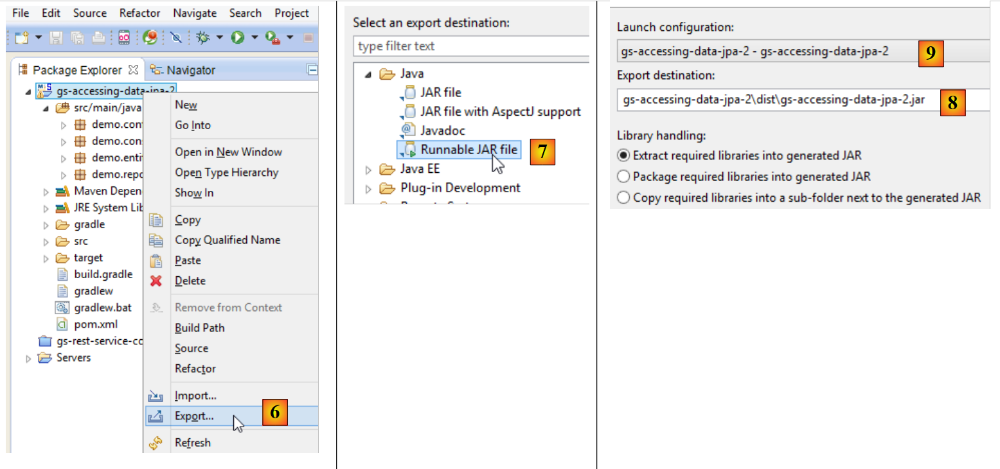 |
- in [6]: si esporta il progetto;
- in [7]: sotto forma di archivio eseguibile JAR;
- in [8]: indica il percorso e il nome del file eseguibile da creare;
- in [9]: il nome della configurazione di esecuzione creata in [5];
Fatto ciò, si apre una console nella cartella contenente l'archivio eseguibile:
L'archivio viene eseguito nel modo seguente:
.....\dist>java -jar gs-accessing-data-jpa-2.jar
I risultati ottenuti nella console sono i seguenti:
2.2.7. Creare un nuovo progetto Spring Data
Per creare uno scheletro di progetto Spring Data, è possibile procedere come segue:
 |
- in [1], si crea un nuovo progetto;
- in [2]: di tipo [Spring Starter Project];
- il progetto generato sarà un progetto Maven. In [3], si indica il nome del gruppo del progetto;
- in [4]: si indica il nome dell'artefatto (in questo caso un jar) che verrà creato durante la compilazione del progetto;
- in [5]: si indica il pacchetto della classe eseguibile che verrà creata nel progetto;
- in [6]: il nome Eclipse del progetto – può essere qualsiasi nome (non deve necessariamente coincidere con [4]);
- in [7]: si indica che si intende creare un progetto con un livello [JPA]. Le dipendenze necessarie per tale progetto saranno quindi incluse nel file [pom.xml];
 |
- in [8]: il progetto creato;
Il file [pom.xml] integra le dipendenze necessarie per un progetto JPA:
<parent>
<groupId>org.springframework.boot</groupId>
<artifactId>spring-boot-starter-parent</artifactId>
<version>1.1.0.RELEASE</version>
<relativePath/> <!-- ricerca del genitore dal repository -->
</parent>
<dependencies>
<dependency>
<groupId>org.springframework.boot</groupId>
<artifactId>spring-boot-starter-data-jpa</artifactId>
</dependency>
<dependency>
<groupId>org.springframework.boot</groupId>
<artifactId>spring-boot-starter-test</artifactId>
<scope>test</scope>
</dependency>
</dependencies>
- righe 9-12: le dipendenze necessarie per JPA – includeranno [Spring Data];
- righe 13-17: le dipendenze necessarie per i test JUnit integrati con Spring;
La classe eseguibile [Application] non esegue alcuna operazione, ma è preconfigurata:
package istia.st;
import org.springframework.boot.SpringApplication;
import org.springframework.boot.autoconfigure.EnableAutoConfiguration;
import org.springframework.context.annotation.ComponentScan;
import org.springframework.context.annotation.Configuration;
@Configuration
@ComponentScan
@EnableAutoConfiguration
public class Application {
public static void main(String[] args) {
SpringApplication.run(Application.class, args);
}
}
La classe di test [ApplicationTests] non esegue alcuna operazione ma è preconfigurata:
package istia.st;
import org.junit.Test;
import org.junit.runner.RunWith;
import org.springframework.boot.test.SpringApplicationConfiguration;
import org.springframework.test.context.junit4.SpringJUnit4ClassRunner;
@RunWith(SpringJUnit4ClassRunner.class)
@SpringApplicationConfiguration(classes = Application.class)
public class ApplicationTests {
@Test
public void contextLoads() {
}
}
- riga 9: l'annotazione [@SpringApplicationConfiguration] consente di utilizzare il file di configurazione [Application]. La classe di test beneficerà così di tutti i bean definiti da questo file;
- riga 8: l’annotazione [@RunWith] consente l’integrazione di Spring con JUnit: la classe potrà essere eseguita come un test JUnit. [@RunWith] è un'annotazione JUnit (riga 4), mentre la classe [SpringJUnit4ClassRunner] è una classe Spring (riga 6);
Ora che disponiamo di uno scheletro dell’applicazione JPA, possiamo completarlo per scrivere il progetto del livello di persistenza del server della nostra applicazione di gestione degli appuntamenti.
2.3. Il progetto Eclipse del server
 |
 |
Gli elementi principali del progetto sono i seguenti:
- [pom.xml]: file di configurazione Maven del progetto;
- [rdvmedecins.entities]: le entità JPA;
- [rdvmedecins.repositories]: le interfacce Spring Data per l'accesso alle entità JPA;
- [rdvmedecins.metier]: il livello [métier];
- [rdvmedecins.domain]: le entità gestite dal livello [métier];
- [rdvmdecins.config]: le classi di configurazione del livello di persistenza;
- [rdvmedecins.boot]: un'applicazione console di base;
2.4. La configurazione Maven
 | 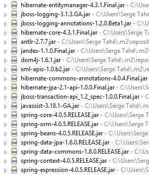 |  |
Il file [pom.xml] del progetto è il seguente:
<?xml version="1.0" encoding="UTF-8"?>
<project xmlns="http://maven.apache.org/POM/4.0.0" xsi:schemaLocation="http://maven.apache.org/POM/4.0.0 http://maven.apache.org/maven-v4_0_0.xsd"
xmlns:xsi="http://www.w3.org/2001/XMLSchema-instance">
<modelVersion>4.0.0</modelVersion>
<groupId>istia.st.spring4.rdvmedecins</groupId>
<artifactId>rdvmedecins-metier-dao</artifactId>
<version>0.0.1-SNAPSHOT</version>
<parent>
<groupId>org.springframework.boot</groupId>
<artifactId>spring-boot-starter-parent</artifactId>
<version>1.0.0.RELEASE</version>
</parent>
<dependencies>
<dependency>
<groupId>org.springframework.boot</groupId>
<artifactId>spring-boot-starter-data-jpa</artifactId>
</dependency>
<dependency>
<groupId>org.springframework.boot</groupId>
<artifactId>spring-boot-starter-test</artifactId>
<scope>test</scope>
</dependency>
<dependency>
<groupId>mysql</groupId>
<artifactId>mysql-connector-java</artifactId>
</dependency>
<dependency>
<groupId>commons-dbcp</groupId>
<artifactId>commons-dbcp</artifactId>
</dependency>
<dependency>
<groupId>commons-pool</groupId>
<artifactId>commons-pool</artifactId>
</dependency>
<dependency>
<groupId>com.fasterxml.jackson.core</groupId>
<artifactId>jackson-databind</artifactId>
</dependency>
<dependency>
<groupId>com.google.guava</groupId>
<artifactId>guava</artifactId>
<version>16.0.1</version>
</dependency>
</dependencies>
<properties>
<!-- utilizzare UTF-8 per tutto -->
<project.build.sourceEncoding>UTF-8</project.build.sourceEncoding>
<project.reporting.outputEncoding>UTF-8</project.reporting.outputEncoding>
<start-class>istia.st.spring.data.main.Application</start-class>
</properties>
<build>
<plugins>
<plugin>
<artifactId>maven-compiler-plugin</artifactId>
</plugin>
<plugin>
<groupId>org.springframework.boot</groupId>
<artifactId>spring-boot-maven-plugin</artifactId>
</plugin>
</plugins>
</build>
<repositories>
<repository>
<id>spring-milestones</id>
<name>Spring Milestones</name>
<url>http://repo.spring.io/libs-milestone</url>
<snapshots>
<enabled>false</enabled>
</snapshots>
</repository>
<repository>
<id>org.jboss.repository.releases</id>
<name>JBoss Maven Release Repository</name>
<url>https://repository.jboss.org/nexus/content/repositories/releases</url>
<snapshots>
<enabled>false</enabled>
</snapshots>
</repository>
</repositories>
<pluginRepositories>
<pluginRepository>
<id>spring-milestones</id>
<name>Spring Milestones</name>
<url>http://repo.spring.io/libs-milestone</url>
<snapshots>
<enabled>false</enabled>
</snapshots>
</pluginRepository>
</pluginRepositories>
</project>
- righe 8-12: il progetto si basa sul progetto padre [spring-boot-starter-parent]. Per le dipendenze già presenti nel progetto padre, non si specifica alcuna versione. Verrà utilizzata la versione definita nel progetto padre. Per le altre dipendenze, queste vengono dichiarate normalmente;
- righe 14-17: per Spring Data;
- righe 18-22: per i test JUnit;
- righe 23-26: driver JDBC di SGBD MySQL5;
- righe 27-34: pool di connessioni Commons DBCP;
- righe 35-38: libreria Jackson per la gestione di JSON;
- righe 39-43: libreria Google per la gestione delle collezioni;
La versione 1.1.0.RC1 di [spring-boot-starter-parent] utilizza le seguenti versioni delle librerie:
2.5. Le entità JPA
 |
Gli enti JPA sono gli oggetti che incapsulano le righe delle tabelle del database.
 |
La classe [AbstractEntity] è la classe padre delle entità [Personne, Creneau, Rv]. La sua definizione è la seguente:
package rdvmedecins.entities;
import java.io.Serializable;
import javax.persistence.GeneratedValue;
import javax.persistence.GenerationType;
import javax.persistence.Id;
import javax.persistence.MappedSuperclass;
import javax.persistence.Version;
@MappedSuperclass
public class AbstractEntity implements Serializable {
private static final long serialVersionUID = 1L;
@Id
@GeneratedValue(strategy = GenerationType.AUTO)
protected Long id;
@Version
protected Long version;
@Override
public int hashCode() {
int hash = 0;
hash += (id != null ? id.hashCode() : 0);
return hash;
}
// inizializzazione
public AbstractEntity build(Long id, Long version) {
this.id = id;
this.version = version;
return this;
}
@Override
public boolean equals(Object entity) {
String class1 = this.getClass().getName();
String class2 = entity.getClass().getName();
if (!class2.equals(class1)) {
return false;
}
AbstractEntity other = (AbstractEntity) entity;
return this.id == other.id;
}
// getters e setters
..
}
- riga 11: l’annotazione [@MappedSuperclass] indica che la classe annotata è la classe padre delle entità JPA e [@Entity];
- righe 15-17: definiscono la chiave primaria [id] di ciascuna entità. È l’annotazione [@Id] che rende il campo [id] una chiave primaria. L'annotazione [@GeneratedValue(strategy = GenerationType.AUTO)] indica che il valore di questa chiave primaria è generato da SGBD e che non è imposta alcuna modalità di generazione;
- righe 18-19: definiscono la versione di ciascuna entità. L’implementazione JPA incrementerà questo numero di versione ogni volta che l’entità verrà modificata. Questo numero serve a impedire l’aggiornamento simultaneo dell’entità da parte di due utenti diversi: due utenti, U1 e U2, leggono l’entità E con un numero di versione pari a V1. U1 modifica E e salva tale modifica nel database: il numero di versione passa quindi a V1+1. U2 a sua volta modifica E e salva tale modifica nel database: riceverà un'eccezione poiché possiede una versione (V1) diversa da quella presente nel database (V1+1);
- righe 29-33: il metodo [build] consente di inizializzare i due campi di [AbstractEntity]. Questo metodo rende il riferimento all’istanza [AbstractEntity] così inizializzato;
- righe 36-44: il metodo [equals] della classe viene ridefinito: due entità saranno considerate uguali se hanno lo stesso nome di classe e lo stesso identificatore id;
L'entità [Personne] è la classe padre delle entità [Medecin] e [Client]:
package rdvmedecins.entities;
import javax.persistence.Column;
import javax.persistence.MappedSuperclass;
@MappedSuperclass
public class Personne extends AbstractEntity {
private static final long serialVersionUID = 1L;
// attributi di una persona
@Column(length = 5)
private String titre;
@Column(length = 20)
private String nom;
@Column(length = 20)
private String prenom;
// costruttore predefinito
public Personne() {
}
// costruttore con parametri
public Personne(String titre, String nom, String prenom) {
this.titre = titre;
this.nom = nom;
this.prenom = prenom;
}
// toString
public String toString() {
return String.format("Personne[%s, %s, %s, %s, %s]", id, version, titre, nom, prenom);
}
// getter e setter
...
}
- riga 6: l'annotazione [@MappedSuperclass] indica che la classe annotata è la classe padre delle entità JPA e [@Entity];
- righe 10-15: una persona ha un titolo (Melle), un nome (Jacqueline) e un cognome (Tatou). Non vengono fornite informazioni sulle colonne della tabella. Per impostazione predefinita, avranno quindi gli stessi nomi dei campi;
L'entità [Medecin] è la seguente:
package rdvmedecins.entities;
import javax.persistence.Entity;
import javax.persistence.Table;
@Entity
@Table(name = "medecins")
public class Medecin extends Personne {
private static final long serialVersionUID = 1L;
// costruttore predefinito
public Medecin() {
}
// costruttore con parametri
public Medecin(String titre, String nom, String prenom) {
super(titre, nom, prenom);
}
public String toString() {
return String.format("Medecin[%s]", super.toString());
}
}
- riga 6: la classe è un'entità JPA;
- riga 7: associata alla tabella [MEDECINS] del database;
- riga 8: l'entità [Medecin] deriva dall'entità [Personne];
Un medico potrà essere inizializzato nel modo seguente:
Se, inoltre, si desidera assegnargli un identificativo e una versione, si potrà scrivere:
dove il metodo [build] è quello definito in [AbstractEntity].
L’entità [Client] è la seguente:
package rdvmedecins.entities;
import javax.persistence.Entity;
import javax.persistence.Table;
@Entity
@Table(name = "clients")
public class Client extends Personne {
private static final long serialVersionUID = 1L;
// costruttore predefinito
public Client() {
}
// costruttore con parametri
public Client(String titre, String nom, String prenom) {
super(titre, nom, prenom);
}
// identità
public String toString() {
return String.format("Client[%s]", super.toString());
}
}
- riga 6: la classe è un'entità JPA;
- riga 7: associata alla tabella [CLIENTS] del database;
- riga 8: l'entità [Client] deriva dall'entità [Personne];
L'entità [Creneau] è la seguente:
package rdvmedecins.entities;
import javax.persistence.Column;
import javax.persistence.Entity;
import javax.persistence.FetchType;
import javax.persistence.JoinColumn;
import javax.persistence.ManyToOne;
import javax.persistence.Table;
@Entity
@Table(name = "creneaux")
public class Creneau extends AbstractEntity {
private static final long serialVersionUID = 1L;
// caratteristiche di una fascia oraria di RV
private int hdebut;
private int mdebut;
private int hfin;
private int mfin;
// un turno è associato a un medico
@ManyToOne(fetch = FetchType.LAZY)
@JoinColumn(name = "id_medecin")
private Medecin medecin;
// chiave esterna
@Column(name = "id_medecin", insertable = false, updatable = false)
private long idMedecin;
// costruttore predefinito
public Creneau() {
}
// costruttore con parametri
public Creneau(Medecin medecin, int hdebut, int mdebut, int hfin, int mfin) {
this.medecin = medecin;
this.hdebut = hdebut;
this.mdebut = mdebut;
this.hfin = hfin;
this.mfin = mfin;
}
// toString
public String toString() {
return String.format("Créneau[%d, %d, %d, %d:%d, %d:%d]", id, version, idMedecin, hdebut, mdebut, hfin, mfin);
}
// chiave esterna
public long getIdMedecin() {
return idMedecin;
}
// setter - getter
...
}
- riga 10: la classe è un'entità JPA;
- riga 11: associata alla tabella [CRENEAUX] del database;
- riga 12: l'entità [Creneau] deriva dall'entità [AbstractEntity] e eredita quindi l'identificativo [id] e la versione [version];
- riga 16: ora di inizio della fascia oraria (14);
- riga 17: minuti di inizio della fascia oraria (20);
- riga 18: ora di fine della fascia oraria (14);
- riga 19: minuti di fine della fascia oraria (40);
- righe 22-24: il medico titolare della fascia oraria. La tabella [CRENEAUX] ha una chiave esterna sulla tabella [MEDECINS]. Questa relazione è rappresentata dalle righe 22-24;
- riga 22: l’annotazione [@ManyToOne] indica una relazione da molti (fasce orarie) a uno (medico). L'attributo [fetch=FetchType.LAZY] indica che quando si richiede un'entità [Creneau] al contesto di persistenza e questa deve essere ricercata nel database, l'entità [Medecin] non viene recuperata insieme ad essa. Il vantaggio di questa modalità è che l’entità [Medecin] viene ricercata solo se lo sviluppatore lo richiede. In questo modo si risparmia memoria e si migliorano le prestazioni;
- riga 23: indica il nome della colonna chiave esterna nella tabella [CRENEAUX];
- righe 27-28: la chiave esterna nella tabella [MEDECINS];
- riga 27: la colonna [ID_MEDECIN] è già stata utilizzata alla riga 23. Ciò significa che può essere modificata in due modi diversi, cosa che lo standard JPA non ammette. Si aggiungono quindi gli attributi [insertable = false, updatable = false], in modo che la colonna sia di sola lettura;
L'entità [Rv] è la seguente:
package rdvmedecins.entities;
import java.util.Date;
import javax.persistence.Column;
import javax.persistence.Entity;
import javax.persistence.FetchType;
import javax.persistence.JoinColumn;
import javax.persistence.ManyToOne;
import javax.persistence.Table;
import javax.persistence.Temporal;
import javax.persistence.TemporalType;
@Entity
@Table(name = "rv")
public class Rv extends AbstractEntity {
private static final long serialVersionUID = 1L;
// caratteristiche di un Rv
@Temporal(TemporalType.DATE)
private Date jour;
// un RV è associato a un cliente
@ManyToOne(fetch = FetchType.LAZY)
@JoinColumn(name = "id_client")
private Client client;
// un RV è collegato a una fascia oraria
@ManyToOne(fetch = FetchType.LAZY)
@JoinColumn(name = "id_creneau")
private Creneau creneau;
// chiavi esterne
@Column(name = "id_client", insertable = false, updatable = false)
private long idClient;
@Column(name = "id_creneau", insertable = false, updatable = false)
private long idCreneau;
// Costruttore predefinito
public Rv() {
}
// con parametri
public Rv(Date jour, Client client, Creneau creneau) {
this.jour = jour;
this.client = client;
this.creneau = creneau;
}
// toString
public String toString() {
return String.format("Rv[%d, %s, %d, %d]", id, jour, client.id, creneau.id);
}
// chiavi esterne
public long getIdCreneau() {
return idCreneau;
}
public long getIdClient() {
return idClient;
}
// getters e setters
...
}
- riga 14: la classe è un'entità JPA;
- riga 15: associata alla tabella [RV] del database;
- riga 16: l'entità [Rv] deriva dall'entità [AbstractEntity] e eredita quindi l'identificativo [id] e la versione [version];
- riga 21: la data dell'appuntamento;
- riga 20: il tipo [Date] di Java contiene sia una data che un'ora. Qui si specifica che viene utilizzata solo la data;
- righe 24-26: il cliente per il quale è stato fissato questo appuntamento. La tabella [RV] ha una chiave esterna sulla tabella [CLIENTS]. Questa relazione è rappresentata dalle righe 24-26;
- righe 29-31: la fascia oraria dell’appuntamento. La tabella [RV] ha una chiave esterna sulla tabella [CRENEAUX]. Questa relazione è rappresentata dalle righe 29-31;
- righe 34-35: la chiave esterna [idClient];
- righe 36-37: la chiave esterna [idCreneau];
2.6. Il livello [DAO]
 |
Implementeremo il livello [DAO] con Spring Data:
 |
Il livello [DAO] è implementato con quattro interfacce Spring Data:
- [ClientRepository]: fornisce l’accesso alle entità JPA e [Client];
- [CreneauRepository]: consente l'accesso alle entità JPA e [Creneau];
- [MedecinRepository]: consente l'accesso alle entità JPA e [Medecin];
- [RvRepository]: consente l'accesso alle entità JPA e [Rv];
L'interfaccia [MedecinRepository] è la seguente:
package rdvmedecins.repositories;
import org.springframework.data.repository.CrudRepository;
import rdvmedecins.entities.Medecin;
public interface MedecinRepository extends CrudRepository<Medecin, Long> {
}
- riga 7: l'interfaccia [MedecinRepository] si limita a ereditare i metodi dell'interfaccia [CrudRepository] senza aggiungerne altri;
L'interfaccia [ClientRepository] è la seguente:
package rdvmedecins.repositories;
import org.springframework.data.repository.CrudRepository;
import rdvmedecins.entities.Client;
public interface ClientRepository extends CrudRepository<Client, Long> {
}
- riga 7: l'interfaccia [ClientRepository] si limita a ereditare i metodi dell'interfaccia [CrudRepository] senza aggiungerne altri;
L'interfaccia [CreneauRepository] è la seguente:
package rdvmedecins.repositories;
import org.springframework.data.jpa.repository.Query;
import org.springframework.data.repository.CrudRepository;
import rdvmedecins.entities.Creneau;
public interface CreneauRepository extends CrudRepository<Creneau, Long> {
// elenco delle fasce orarie di un medico
@Query("select c from Creneau c where c.medecin.id=?1")
Iterable<Creneau> getAllCreneaux(long idMedecin);
}
- riga 8: l'interfaccia [CreneauRepository] eredita i metodi dall'interfaccia [CrudRepository];
- righe 10-11: il metodo [getAllCreneaux] consente di ottenere le fasce orarie di un medico;
- riga 11: il parametro è l’identificativo del medico. Il risultato è un elenco di fasce orarie sotto forma di oggetto [Iterable<Creneau>];
- riga 10: l'annotazione [@Query] consente di specificare la query JPQL (Java Persistence Query Language) che implementa il metodo. Il parametro [?1] verrà sostituito dal parametro [idMedecin] del metodo;
L'interfaccia [RvRepository] è la seguente:
package rdvmedecins.repositories;
import java.util.Date;
import org.springframework.data.jpa.repository.Query;
import org.springframework.data.repository.CrudRepository;
import rdvmedecins.entities.Rv;
public interface RvRepository extends CrudRepository<Rv, Long> {
@Query("select rv from Rv rv left join fetch rv.client c left join fetch rv.creneau cr where cr.medecin.id=?1 and rv.jour=?2")
Iterable<Rv> getRvMedecinJour(long idMedecin, Date jour);
}
- riga 10: l’interfaccia [RvRepository] eredita i metodi dall’interfaccia [CrudRepository];
- righe 12-13: il metodo [getRvMedecinJour] consente di ottenere gli appuntamenti di un medico per un determinato giorno;
- riga 13: i parametri sono l’identificativo del medico e il giorno. Il risultato è un elenco di appuntamenti sotto forma di oggetto [Iterable<Rv>];
- riga 12: l'annotazione [@Query] consente di specificare la query JPQL che implementa il metodo. Il parametro [?1] verrà sostituito dal parametro [idMedecin] del metodo e il parametro [?2] verrà sostituito dal parametro [jour] del metodo. Non è sufficiente la seguente query JPQL:
poiché i campi della classe Rv, di tipo [Client] e [Creneau], vengono recuperati in modalità [FetchType.LAZY], il che significa che devono essere richiesti esplicitamente per essere ottenuti. Ciò avviene nella query JPQL con la sintassi [left join fetch entité], che richiede l’esecuzione di un join con la tabella a cui punta la chiave esterna al fine di recuperare l’entità indicata;
2.7. Il livello [métier]
 |
 |
- [IMetier] è l'interfaccia del livello [métier] e [Metier] ne costituisce l'implementazione;
- [AgendaMedecinJour] e [CreneauMedecinJour] sono due entità di business;
2.7.1. Le entità
L'entità [CreneauMedecinJour] associa una fascia oraria e l'eventuale appuntamento fissato in tale fascia:
package rdvmedecins.domain;
import java.io.Serializable;
import rdvmedecins.entities.Creneau;
import rdvmedecins.entities.Rv;
public class CreneauMedecinJour implements Serializable {
private static final long serialVersionUID = 1L;
// campi
private Creneau creneau;
private Rv rv;
// costruttori
public CreneauMedecinJour() {
}
public CreneauMedecinJour(Creneau creneau, Rv rv) {
this.creneau=creneau;
this.rv=rv;
}
// toString
@Override
public String toString() {
return String.format("[%s %s]", creneau, rv);
}
// getter e setter
...
}
- riga 12: la fascia oraria;
- riga 13: l'eventuale appuntamento – null in caso contrario;
L'entità [AgendaMedecinJour] rappresenta l'agenda di un medico per un determinato giorno, ovvero l'elenco dei suoi appuntamenti:
package rdvmedecins.domain;
import java.io.Serializable;
import java.text.SimpleDateFormat;
import java.util.Date;
import rdvmedecins.entities.Medecin;
public class AgendaMedecinJour implements Serializable {
private static final long serialVersionUID = 1L;
// campi
private Medecin medecin;
private Date jour;
private CreneauMedecinJour[] creneauxMedecinJour;
// costruttori
public AgendaMedecinJour() {
}
public AgendaMedecinJour(Medecin medecin, Date jour, CreneauMedecinJour[] creneauxMedecinJour) {
this.medecin = medecin;
this.jour = jour;
this.creneauxMedecinJour = creneauxMedecinJour;
}
public String toString() {
StringBuffer str = new StringBuffer("");
for (CreneauMedecinJour cr : creneauxMedecinJour) {
str.append(" ");
str.append(cr.toString());
}
return String.format("Agenda[%s,%s,%s]", medecin, new SimpleDateFormat("dd/MM/yyyy").format(jour), str.toString());
}
// getter e setter
...
}
- riga 13: il medico;
- riga 14: il giorno nell'agenda;
- riga 15: le sue fasce orarie con o senza appuntamenti;
2.7.2. Il servizio
L'interfaccia del livello [métier] è la seguente:
package rdvmedecins.metier;
import java.util.Date;
import java.util.List;
import rdvmedecins.domain.AgendaMedecinJour;
import rdvmedecins.entities.Client;
import rdvmedecins.entities.Creneau;
import rdvmedecins.entities.Medecin;
import rdvmedecins.entities.Rv;
public interface IMetier {
// elenco dei clienti
public List<Client> getAllClients();
// elenco dei medici
public List<Medecin> getAllMedecins();
// elenco delle fasce orarie di un medico
public List<Creneau> getAllCreneaux(long idMedecin);
// elenco degli appuntamenti di un medico in un determinato giorno
public List<Rv> getRvMedecinJour(long idMedecin, Date jour);
// trovare un cliente identificato dal suo ID
public Client getClientById(long id);
// trovare un cliente identificato dal suo ID
public Medecin getMedecinById(long id);
// trovare un appuntamento identificato dal proprio ID
public Rv getRvById(long id);
// trovare una fascia oraria identificata dal proprio ID
public Creneau getCreneauById(long id);
// aggiungere un RV
public Rv ajouterRv(Date jour, Creneau créneau, Client client);
// eliminare un RV
public void supprimerRv(Rv rv);
// professione
public AgendaMedecinJour getAgendaMedecinJour(long idMedecin, Date jour);
}
I commenti spiegano la funzione di ciascuno dei metodi.
L'implementazione dell'interfaccia [IMetier] è la seguente classe [Metier]:
package rdvmedecins.metier;
import java.util.Date;
import java.util.Hashtable;
import java.util.List;
import java.util.Map;
import org.springframework.beans.factory.annotation.Autowired;
import org.springframework.stereotype.Service;
import rdvmedecins.domain.AgendaMedecinJour;
import rdvmedecins.domain.CreneauMedecinJour;
import rdvmedecins.entities.Client;
import rdvmedecins.entities.Creneau;
import rdvmedecins.entities.Medecin;
import rdvmedecins.entities.Rv;
import rdvmedecins.repositories.ClientRepository;
import rdvmedecins.repositories.CreneauRepository;
import rdvmedecins.repositories.MedecinRepository;
import rdvmedecins.repositories.RvRepository;
import com.google.common.collect.Lists;
@Service("métier")
public class Metier implements IMetier {
// repository
@Autowired
private MedecinRepository medecinRepository;
@Autowired
private ClientRepository clientRepository;
@Autowired
private CreneauRepository creneauRepository;
@Autowired
private RvRepository rvRepository;
// implementazione dell'interfaccia
@Override
public List<Client> getAllClients() {
return Lists.newArrayList(clientRepository.findAll());
}
@Override
public List<Medecin> getAllMedecins() {
return Lists.newArrayList(medecinRepository.findAll());
}
@Override
public List<Creneau> getAllCreneaux(long idMedecin) {
return Lists.newArrayList(creneauRepository.getAllCreneaux(idMedecin));
}
@Override
public List<Rv> getRvMedecinJour(long idMedecin, Date jour) {
return Lists.newArrayList(rvRepository.getRvMedecinJour(idMedecin, jour));
}
@Override
public Client getClientById(long id) {
return clientRepository.findOne(id);
}
@Override
public Medecin getMedecinById(long id) {
return medecinRepository.findOne(id);
}
@Override
public Rv getRvById(long id) {
return rvRepository.findOne(id);
}
@Override
public Creneau getCreneauById(long id) {
return creneauRepository.findOne(id);
}
@Override
public Rv ajouterRv(Date jour, Creneau créneau, Client client) {
return rvRepository.save(new Rv(jour, client, créneau));
}
@Override
public void supprimerRv(Rv rv) {
rvRepository.delete(rv.getId());
}
public AgendaMedecinJour getAgendaMedecinJour(long idMedecin, Date jour) {
...
}
}
- riga 24: l'annotazione [@Service] è un'annotazione Spring che rende la classe annotata un componente gestito da Spring. È possibile assegnare o meno un nome a un componente. Questo è denominato [métier];
- riga 25: la classe [Metier] implementa l'interfaccia [IMetier];
- riga 28: l'annotazione [@Autowired] è un'annotazione Spring. Il valore del campo così annotato verrà inizializzato (iniettato) da Spring con il riferimento a un componente Spring del tipo o del nome specificati. In questo caso l’annotazione [@Autowired] non specifica alcun nome. Verrà quindi effettuata un’iniezione per tipo;
- riga 29: il campo [medecinRepository] verrà inizializzato con il riferimento a un componente Spring di tipo [MedecinRepository]. Si tratterà del riferimento alla classe generata da Spring Data per implementare l’interfaccia [MedecinRepository] che abbiamo già presentato;
- righe 30-35: questo processo viene ripetuto per le altre tre interfacce esaminate;
- righe 39-41: implementazione del metodo [getAllClients];
- riga 40: utilizziamo il metodo [findAll] dell’interfaccia [ClientRepository]. Questo metodo restituisce un tipo [Iterable<Client>] che trasformiamo in [List<Client>] con il metodo statico [Lists.newArrayList]. La classe [Lists] è definita nella libreria Google Guava. In [pom.xml] è stata importata questa dipendenza:
<dependency>
<groupId>com.google.guava</groupId>
<artifactId>guava</artifactId>
<version>16.0.1</version>
</dependency>
- righe 38-86: i metodi dell'interfaccia [IMetier] sono implementati con l'ausilio delle classi del livello [DAO];
Solo il metodo della riga 88 è specifico del livello [métier]. È stato inserito qui perché esegue un’elaborazione specifica del business che non si limita a un semplice accesso ai dati. Senza questo metodo, non c’era motivo di creare un livello [métier]. Il metodo [getAgendaMedecinJour] è il seguente:
public AgendaMedecinJour getAgendaMedecinJour(long idMedecin, Date jour) {
// elenco delle fasce orarie del medico
List<Creneau> creneauxHoraires = getAllCreneaux(idMedecin);
// elenco delle prenotazioni dello stesso medico per lo stesso giorno
List<Rv> reservations = getRvMedecinJour(idMedecin, jour);
// si crea un dizionario a partire dagli appuntamenti fissati
Map<Long, Rv> hReservations = new Hashtable<Long, Rv>();
for (Rv resa : reservations) {
hReservations.put(resa.getCreneau().getId(), resa);
}
// si crea l'agenda per il giorno richiesto
AgendaMedecinJour agenda = new AgendaMedecinJour();
// il medico
agenda.setMedecin(getMedecinById(idMedecin));
// il giorno
agenda.setJour(jour);
// le fasce orarie di prenotazione
CreneauMedecinJour[] creneauxMedecinJour = new CreneauMedecinJour[creneauxHoraires.size()];
agenda.setCreneauxMedecinJour(creneauxMedecinJour);
// compilazione delle fasce orarie di prenotazione
for (int i = 0; i < creneauxHoraires.size(); i++) {
// riga i dell'agenda
creneauxMedecinJour[i] = new CreneauMedecinJour();
// fascia oraria
Creneau créneau = creneauxHoraires.get(i);
long idCreneau = créneau.getId();
creneauxMedecinJour[i].setCreneau(créneau);
// la fascia oraria è libera o prenotata?
if (hReservations.containsKey(idCreneau)) {
// la fascia oraria è occupata - si registra la prenotazione
Rv resa = hReservations.get(idCreneau);
creneauxMedecinJour[i].setRv(resa);
}
}
// si restituisce il risultato
return agenda;
}
Si invita il lettore a leggere i commenti. L’algoritmo è il seguente:
- si recuperano tutte le fasce orarie del medico indicato;
- si recuperano tutti i suoi appuntamenti per il giorno indicato;
- con queste due informazioni, si è in grado di stabilire se una fascia oraria è libera o occupata;
2.8. La configurazione del progetto
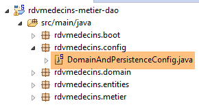 |
La classe [DomainAndPersitenceConfig] configura l'intero progetto:
package rdvmedecins.config;
import javax.sql.DataSource;
import org.apache.commons.dbcp.BasicDataSource;
import org.springframework.boot.autoconfigure.EnableAutoConfiguration;
import org.springframework.boot.orm.jpa.EntityScan;
import org.springframework.context.annotation.Bean;
import org.springframework.context.annotation.ComponentScan;
import org.springframework.data.jpa.repository.config.EnableJpaRepositories;
import org.springframework.orm.jpa.JpaVendorAdapter;
import org.springframework.orm.jpa.vendor.Database;
import org.springframework.orm.jpa.vendor.HibernateJpaVendorAdapter;
import org.springframework.transaction.annotation.EnableTransactionManagement;
@EnableJpaRepositories(basePackages = { "rdvmedecins.repositories" })
@EnableAutoConfiguration
@ComponentScan(basePackages = { "rdvmedecins" })
@EntityScan(basePackages = { "rdvmedecins.entities" })
@EnableTransactionManagement
public class DomainAndPersistenceConfig {
// la fonte dei dati MySQL
@Bean
public DataSource dataSource() {
BasicDataSource dataSource = new BasicDataSource();
dataSource.setDriverClassName("com.mysql.jdbc.Driver");
dataSource.setUrl("jdbc:mysql://localhost:3306/dbrdvmedecins");
dataSource.setUsername("root");
dataSource.setPassword("");
return dataSource;
}
// il provider JPA - non è necessario se si è soddisfatti dei valori predefiniti utilizzati da Spring Boot
// qui lo si definisce per attivare/disattivare i log SQL
@Bean
public JpaVendorAdapter jpaVendorAdapter() {
HibernateJpaVendorAdapter hibernateJpaVendorAdapter = new HibernateJpaVendorAdapter();
hibernateJpaVendorAdapter.setShowSql(false);
hibernateJpaVendorAdapter.setGenerateDdl(false);
hibernateJpaVendorAdapter.setDatabase(Database.MYSQL);
return hibernateJpaVendorAdapter;
}
// EntityManagerFactory e TransactionManager sono definiti con valori predefiniti da Spring Boot
}
- riga 45: non definiremo i bean [EntityManagerFactory] e [TransactionManager]. A tal fine, faremo affidamento sull’annotazione [@EnableAutoConfiguration] di Spring Boot (riga 17);
- righe 24-32: definiscono la fonte dati MySQL5. Si tratta di un bean che in genere non può essere individuato da Spring Boot;
- righe 36-43: configuriamo inoltre l’implementazione JPA per impostare l’attributo [showSql] di Hibernate su false (riga 39). Per impostazione predefinita, è impostato su true;
- per il momento, gli unici componenti gestiti da Spring sono i bean delle righe 25 e 37, oltre ai bean [EntityManagerFactory] e [TransactionManager] tramite autoconfigurazione. Dobbiamo aggiungere i bean dei livelli [métier] e [DAO];
- la riga 16 aggiunge al contesto Spring le interfacce del pacchetto [rdvmdecins.repositories] che ereditano dall’interfaccia [CrudRepository];
- la riga 18 aggiunge al contesto Spring tutte le classi del pacchetto [rdvmedecins] e i suoi discendenti che presentano un'annotazione Spring. Nel pacchetto [rdvmdecins.metier], la classe [Metier] con la sua annotazione [@Service] verrà individuata e aggiunta al contesto Spring;
- riga 45: Spring Boot definirà per impostazione predefinita un bean [entityManagerFactory]. È necessario indicare a questo bean dove si trovano le entità JPA che deve gestire. È la riga 19 a svolgere questa funzione;
- riga 20: indica che i metodi delle interfacce che ereditano dall'interfaccia [CrudRepository] devono essere eseguiti all'interno di una transazione;
2.9. I test del livello [métier]
La classe [rdvmedecins.tests.Metier] è una classe di test Spring / JUnit 4:
package rdvmedecins.tests;
import java.text.ParseException;
import java.util.Date;
import java.util.List;
import org.junit.Assert;
import org.junit.Test;
import org.junit.runner.RunWith;
import org.springframework.beans.factory.annotation.Autowired;
import org.springframework.boot.test.SpringApplicationConfiguration;
import org.springframework.test.context.junit4.SpringJUnit4ClassRunner;
import rdvmedecins.config.DomainAndPersistenceConfig;
import rdvmedecins.domain.AgendaMedecinJour;
import rdvmedecins.entities.Client;
import rdvmedecins.entities.Creneau;
import rdvmedecins.entities.Medecin;
import rdvmedecins.entities.Rv;
import rdvmedecins.metier.IMetier;
@SpringApplicationConfiguration(classes = DomainAndPersistenceConfig.class)
@RunWith(SpringJUnit4ClassRunner.class)
public class Metier {
@Autowired
private IMetier métier;
@Test
public void test1(){
// visualizzazione clienti
List<Client> clients = métier.getAllClients();
display("Liste des clients :", clients);
// visualizzazione medici
List<Medecin> medecins = métier.getAllMedecins();
display("Liste des médecins :", medecins);
// visualizzazione delle fasce orarie di un medico
Medecin médecin = medecins.get(0);
List<Creneau> creneaux = métier.getAllCreneaux(médecin.getId());
display(String.format("Liste des créneaux du médecin %s", médecin), creneaux);
// elenco degli appuntamenti di un medico in un determinato giorno
Date jour = new Date();
display(String.format("Liste des rv du médecin %s, le [%s]", médecin, jour), métier.getRvMedecinJour(médecin.getId(), jour));
// aggiungere un RV
Rv rv = null;
Creneau créneau = creneaux.get(2);
Client client = clients.get(0);
System.out.println(String.format("Ajout d'un Rv le [%s] dans le créneau %s pour le client %s", jour, créneau,
client));
rv = métier.ajouterRv(jour, créneau, client);
// verifica
Rv rv2 = métier.getRvById(rv.getId());
Assert.assertEquals(rv, rv2);
display(String.format("Liste des Rv du médecin %s, le [%s]", médecin, jour), métier.getRvMedecinJour(médecin.getId(), jour));
// aggiungere un RV nella stessa fascia oraria dello stesso giorno
// deve generare un'eccezione
System.out.println(String.format("Ajout d'un Rv le [%s] dans le créneau %s pour le client %s", jour, créneau,
client));
Boolean erreur = false;
try {
rv = métier.ajouterRv(jour, créneau, client);
System.out.println("Rv ajouté");
} catch (Exception ex) {
Throwable th = ex;
while (th != null) {
System.out.println(ex.getMessage());
th = th.getCause();
}
// si registra l'errore
erreur = true;
}
// si verifica che si sia verificato un errore
Assert.assertTrue(erreur);
// elenco dei RV
display(String.format("Liste des Rv du médecin %s, le [%s]", médecin, jour), métier.getRvMedecinJour(médecin.getId(), jour));
// visualizzazione calendario
AgendaMedecinJour agenda = métier.getAgendaMedecinJour(médecin.getId(), jour);
System.out.println(agenda);
Assert.assertEquals(rv, agenda.getCreneauxMedecinJour()[2].getRv());
// eliminare un RV
System.out.println("Suppression du Rv ajouté");
métier.supprimerRv(rv);
// verifica
rv2 = métier.getRvById(rv.getId());
Assert.assertNull(rv2);
display(String.format("Liste des Rv du médecin %s, le [%s]", médecin, jour), métier.getRvMedecinJour(médecin.getId(), jour));
}
// metodo di utilità - visualizza gli elementi di una collezione
private void display(String message, Iterable<?> elements) {
System.out.println(message);
for (Object element : elements) {
System.out.println(element);
}
}
}
- riga 22: l'annotazione [@SpringApplicationConfiguration] consente di utilizzare il file di configurazione [DomainAndPersistenceConfig] esaminato in precedenza. La classe di test beneficia così di tutti i bean definiti da questo file;
- riga 23: l'annotazione [@RunWith] consente l'integrazione di Spring con JUnit: la classe potrà essere eseguita come un test JUnit. [@RunWith] è un'annotazione JUnit (riga 9), mentre la classe [SpringJUnit4ClassRunner] è una classe Spring (riga 12);
- righe 26-27: iniezione nella classe di test di un riferimento al livello [métier];
- molti test sono semplici test visivi:
- righe 32-33: elenco dei clienti;
- righe 35-36: elenco dei medici;
- righe 39-40: elenco degli slot di un medico;
- riga 43: elenco degli appuntamenti di un medico;
- riga 50: aggiunta di un nuovo appuntamento. Il metodo [ajouterRv] restituisce l'appuntamento con un'informazione aggiuntiva, ovvero la sua chiave primaria id;
- riga 53: si utilizza questa chiave primaria per cercare l’appuntamento nel database;
- riga 54: si verifica che l’appuntamento cercato e quello trovato siano lo stesso. Si ricorda che il metodo [equals] dell’entità [Rv] è stato ridefinito: due appuntamenti sono uguali se hanno lo stesso id. In questo caso, ciò ci dimostra che l’appuntamento aggiunto è stato effettivamente inserito nel database;
- righe 61-73: si tenta di aggiungere una seconda volta lo stesso appuntamento. Ciò deve essere rifiutato dal SGBD poiché esiste un vincolo di unicità:
CREATE TABLE IF NOT EXISTS `rv` (
`ID` bigint(20) NOT NULL AUTO_INCREMENT,
`JOUR` date NOT NULL,
`ID_CLIENT` bigint(20) NOT NULL,
`ID_CRENEAU` bigint(20) NOT NULL,
`VERSION` int(11) NOT NULL DEFAULT '0',
PRIMARY KEY (`ID`),
UNIQUE KEY `UNQ1_RV` (`JOUR`,`ID_CRENEAU`),
KEY `FK_RV_ID_CRENEAU` (`ID_CRENEAU`),
KEY `FK_RV_ID_CLIENT` (`ID_CLIENT`)
) ENGINE=InnoDB DEFAULT CHARSET=utf8 COLLATE=utf8_swedish_ci AUTO_INCREMENT=60 ;
La riga 8 sopra indica che la combinazione [JOUR, ID_CRENEAU] deve essere unica, il che impedisce di inserire due appuntamenti nello stesso giorno e nella stessa fascia oraria.
- riga 73: si verifica che si sia effettivamente verificata un'eccezione;
- riga 77: si richiede l’agenda del medico per il quale è stato appena aggiunto un appuntamento;
- riga 79: si verifica che l'appuntamento aggiunto sia effettivamente presente nel suo calendario;
- riga 82: si elimina l’appuntamento aggiunto;
- riga 84: si recupera dal database l’appuntamento eliminato;
- riga 85: si verifica di aver recuperato un puntatore null, a dimostrazione che l'appuntamento cercato non esiste;
L'esecuzione del test ha esito positivo:
 |
2.10. Il programma da console
 |
Il programma da console è semplice. Illustra come recuperare una chiave esterna:
package rdvmedecins.boot;
import java.text.SimpleDateFormat;
import java.util.Date;
import org.springframework.boot.SpringApplication;
import org.springframework.context.ConfigurableApplicationContext;
import rdvmedecins.config.DomainAndPersistenceConfig;
import rdvmedecins.entities.Client;
import rdvmedecins.entities.Creneau;
import rdvmedecins.entities.Rv;
import rdvmedecins.metier.IMetier;
public class Boot {
// avvio
public static void main(String[] args) {
// si prepara la configurazione
SpringApplication app = new SpringApplication(DomainAndPersistenceConfig.class);
app.setLogStartupInfo(false);
// si avvia
ConfigurableApplicationContext context = app.run(args);
// attività
IMetier métier = context.getBean(IMetier.class);
try {
// aggiungere un RV
Date jour = new Date();
System.out.println(String.format("Ajout d'un Rv le [%s] dans le créneau 1 pour le client 1", new SimpleDateFormat("dd/MM/yyyy").format(jour)));
Client client = (Client) new Client().build(1L, 1L);
Creneau créneau = (Creneau) new Creneau().build(1L, 1L);
Rv rv = métier.ajouterRv(jour, créneau, client);
System.out.println(String.format("Rv ajouté = %s", rv));
// verifica
créneau = métier.getCreneauById(1L);
long idMedecin = créneau.getIdMedecin();
display("Liste des rendez-vous", métier.getRvMedecinJour(idMedecin, jour));
} catch (Exception ex) {
System.out.println("Exception : " + ex.getCause());
}
// chiusura del contesto Spring
context.close();
}
// metodo di utilità - visualizza gli elementi di una collezione
private static <T> void display(String message, Iterable<T> elements) {
System.out.println(message);
for (T element : elements) {
System.out.println(element);
}
}
}
Il programma aggiunge un appuntamento e poi verifica che sia stato aggiunto.
- riga 19: la classe [SpringApplication] utilizzerà la classe di configurazione [DomainAndPersistenceConfig];
- riga 20: eliminazione dei log di avvio dell’applicazione;
- riga 22: viene eseguita la classe [SpringApplication]. Restituisce un contesto Spring, ovvero l'elenco dei bean registrati;
- riga 24: si recupera un riferimento al bean che implementa l'interfaccia [IMetier]. Si tratta quindi di un riferimento al livello [métier];
- righe 27-31: aggiunta di un nuovo appuntamento per oggi, per il cliente n. 1 nella fascia oraria n. 1. Il cliente e la fascia oraria sono stati creati ad hoc per dimostrare che vengono utilizzati solo gli identificativi. Qui è stata inizializzata la versione, ma si sarebbe potuto inserire qualsiasi valore. In questo caso non viene utilizzata;
- riga 34: si vuole conoscere il medico a cui è assegnata la fascia n. 1. A tal fine è necessario recuperare dalla banca dati la fascia n. 1. Poiché ci si trova in modalità [FetchType.LAZY], il medico non viene restituito insieme alla fascia. Tuttavia, abbiamo provveduto a prevedere un campo [idMedecin] nell’entità [Creneau] per recuperare la chiave primaria del medico;
- riga 35: si recupera il codice primario del medico;
- riga 35: si visualizza l'elenco degli appuntamenti del medico;
I risultati della console sono i seguenti:
2.11. Introduzione a Spring MVC
 |
Passiamo ora alla realizzazione del livello web. Questo è costituito principalmente da metodi che gestiscono specifici URL e rispondono con una riga di testo nel formato JSON (Javascript Object Notation). Questo livello web è un'interfaccia web talvolta denominata API web. Implementeremo questa interfaccia con Spring MVC, un altro ramo dell'ecosistema Spring. Iniziamo esaminando una delle guide disponibili su [http://spring.io].
2.11.1. Il progetto dimostrativo
 |
- in [1], importiamo una delle guide Spring;
 |
- in [2], scegliamo l’esempio [Rest Service];
- in [3], si seleziona il progetto Maven;
- in [4], si seleziona la versione finale della guida;
- in [5], si conferma;
- in [6], il progetto importato;
I servizi web accessibili tramite URL standard e che restituiscono testo JSON sono spesso denominati servizi REST (REpresentational State Transfer). In questo documento mi limiterò a chiamare il servizio che realizzeremo «servizio web / JSON». Un servizio è detto RESTful se rispetta determinate regole. Non ho cercato di rispettarle.
Esaminiamo ora il progetto importato, iniziando dalla sua configurazione Maven.
2.11.2. Configurazione Maven
Il file [pom.xml] è il seguente:
<?xml version="1.0" encoding="UTF-8"?>
<project xmlns="http://maven.apache.org/POM/4.0.0" xmlns:xsi="http://www.w3.org/2001/XMLSchema-instance"
xsi:schemaLocation="http://maven.apache.org/POM/4.0.0 http://maven.apache.org/xsd/maven-4.0.0.xsd">
<modelVersion>4.0.0</modelVersion>
<groupId>org.springframework</groupId>
<artifactId>gs-rest-service</artifactId>
<version>0.1.0</version>
<parent>
<groupId>org.springframework.boot</groupId>
<artifactId>spring-boot-starter-parent</artifactId>
<version>1.1.0.RELEASE</version>
</parent>
<dependencies>
<dependency>
<groupId>org.springframework.boot</groupId>
<artifactId>spring-boot-starter-web</artifactId>
</dependency>
<dependency>
<groupId>com.fasterxml.jackson.core</groupId>
<artifactId>jackson-databind</artifactId>
</dependency>
</dependencies>
<properties>
<start-class>hello.Application</start-class>
</properties>
<build>
<plugins>
<plugin>
<artifactId>maven-compiler-plugin</artifactId>
</plugin>
<plugin>
<groupId>org.springframework.boot</groupId>
<artifactId>spring-boot-maven-plugin</artifactId>
</plugin>
</plugins>
</build>
<repositories>
<repository>
<id>spring-releases</id>
<url>http://repo.spring.io/release</url>
</repository>
</repositories>
<pluginRepositories>
<pluginRepository>
<id>spring-releases</id>
<url>http://repo.spring.io/release</url>
</pluginRepository>
</pluginRepositories>
</project>
- righe 10-14: come nel progetto [Spring Data], è presente il progetto padre [Spring Boot];
- righe 17-20: l’artefatto [spring-boot-starter-web] include le librerie necessarie per un progetto Spring MVC. In particolare, include un server Tomcat integrato. È su questo server che verrà eseguita l’applicazione;
- righe 21-24: la libreria Jackson gestisce la trasformazione di un oggetto Java in stringa e viceversa;
Le librerie incluse in questa configurazione sono numerose:
 |  |
Sopra sono visibili i tre archivi del server Tomcat.
2.11.3. L'architettura di un servizio Spring REST
Spring MVC implementa il modello architettonico denominato MVC (Modello – Vista – Controller) nel modo seguente:
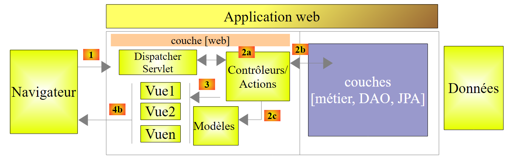 |
L’elaborazione di una richiesta da parte di un cliente avviene nel modo seguente:
- richiesta – le URL richieste hanno la forma http://machine:port/contexte/Action/param1/param2/....?p1=v1&p2=v2&... La [Dispatcher Servlet] è la classe di Spring che gestisce le URL in entrata. Essa "instradano" l'URL verso l'azione che deve elaborarla. Queste azioni sono metodi di classi specifiche denominate [Contrôleurs]. La parte "C" di MVC è in questo caso la stringa [Dispatcher Servlet, Contrôleur, Action]. Se non è stata configurata alcuna azione per gestire l’URL in entrata, il servlet [Dispatcher Servlet] risponderà che l’URL richiesto non è stato trovato (errore 404 NOT FOUND);
- elaborazione
- l’azione selezionata può utilizzare i parametri parami che il servlet [Dispatcher Servlet] le ha trasmesso. Questi possono provenire da diverse fonti:
- dal percorso [/param1/param2/...] del URL,
- dai parametri [p1=v1&p2=v2] del URL,
- dai parametri inviati dal browser insieme alla sua richiesta;
- nell'elaborazione della richiesta dell'utente, l'azione potrebbe richiedere il livello [metier] [2b]. Una volta elaborata la richiesta del cliente, questa può generare diverse risposte. Un esempio classico è:
- una pagina di errore se la richiesta non è stata elaborata correttamente
- una pagina di conferma in caso contrario
- l’azione richiede che venga visualizzata una determinata vista [3]. Questa vista mostrerà i dati che chiamiamo modello della vista. È la M di MVC. L’azione creerà questo modello M [2c] e richiederà la visualizzazione di una vista V [3];
- risposta: la vista V selezionata utilizza il modello M creato dall’azione per inizializzare le parti dinamiche della risposta HTML che deve inviare al client, quindi invia tale risposta.
Per un servizio web / JSON, l’architettura precedente viene leggermente modificata:
 |
- in [4a], il modello, che è una classe Java, viene trasformato in una stringa JSON da una libreria JSON;
- in [4b], questa stringa JSON viene inviata al browser;
2.11.4. Il controller C
 |
L'applicazione importata presenta il seguente controller:
package hello;
import java.util.concurrent.atomic.AtomicLong;
import org.springframework.stereotype.Controller;
import org.springframework.web.bind.annotation.RequestMapping;
import org.springframework.web.bind.annotation.RequestParam;
import org.springframework.web.bind.annotation.ResponseBody;
@Controller
public class GreetingController {
private static final String template = "Hello, %s!";
private final AtomicLong counter = new AtomicLong();
@RequestMapping("/greeting")
public @ResponseBody
Greeting greeting(@RequestParam(value = "name", required = false, defaultValue = "World") String name) {
return new Greeting(counter.incrementAndGet(), String.format(template, name));
}
}
- riga 9: l'annotazione [@Controller] trasforma la classe [GreetingController] in un controller Spring, ovvero i suoi metodi sono registrati per gestire i URL;
- riga 15: l'annotazione [@RequestMapping] indica l'URL che il metodo gestisce, in questo caso l'URL [/greeting]. Vedremo in seguito che questo URL può essere configurato e che è possibile recuperare tali parametri;
- riga 16: l’annotazione [@ResponseBody] indica che il metodo non genera un modello per una vista (JSP, JSF, Thymeleaf, ...) che verrà successivamente inviata al browser client, ma produce essa stessa la risposta inviata al browser. In questo caso, produce un oggetto di tipo [Greeting] (riga 18). Sebbene qui non sia evidente, questo oggetto verrà prima trasformato in JSON prima di essere inviato al browser. È la presenza di una libreria JSON tra le dipendenze del progetto che fa sì che Spring Boot, tramite autoconfigurazione, configuri il progetto in questo modo;
- riga 17: il metodo [greeting] ha un parametro [String name]. L’annotazione [@RequestParam(value = "name", required = false, defaultValue = "World"] indica che questo parametro deve essere inizializzato con un parametro denominato [name](@RequestParam(value = "name"). Quest’ultimo può essere il parametro di un GET o di un POST. Questo parametro non è obbligatorio (required = false). In quest’ultimo caso, il parametro [name] del metodo verrà inizializzato con il valore [World] (defaultValue = "World").
2.11.5. Il modello M
Il modello M generato dal metodo precedente è il seguente oggetto [Greeting]:
 |
package hello;
public class Greeting {
private final long id;
private final String content;
public Greeting(long id, String content) {
this.id = id;
this.content = content;
}
public long getId() {
return id;
}
public String getContent() {
return content;
}
}
La trasformazione JSON di questo oggetto genererà la stringa {"id":n,"content":"testo"}. Alla fine, la stringa JSON generata dal metodo del controller avrà la forma:
oppure
2.11.6. Configurazione del progetto
 |
Il progetto è configurato dalla seguente classe [Application]:
package hello;
import org.springframework.boot.autoconfigure.EnableAutoConfiguration;
import org.springframework.boot.SpringApplication;
import org.springframework.context.annotation.ComponentScan;
@ComponentScan
@EnableAutoConfiguration
public class Application {
public static void main(String[] args) {
SpringApplication.run(Application.class, args);
}
}
- riga 11: curiosamente questa classe è eseguibile con un metodo [main] specifico per le applicazioni da console. È proprio così. La classe [SpringApplication] della riga 12 avvierà il server Tomcat presente nelle dipendenze e distribuirà su di esso il servizio REST;
- riga 4: si nota che la classe [SpringApplication] appartiene al progetto [Spring Boot];
- riga 12: il primo parametro è la classe che configura il progetto, il secondo eventuali parametri;
- riga 8: l'annotazione [@EnableAutoConfiguration] richiede a Spring Boot di configurare il progetto;
- riga 7: l'annotazione [@ComponentScan] fa sì che la cartella contenente la classe [Application] venga analizzata alla ricerca dei componenti Spring. Ne verrà individuato uno, ovvero la classe [GreetingController], che presenta l'annotazione [@Controller] che la rende un componente Spring;
2.11.7. Esecuzione del progetto
Eseguiamo il progetto:
 |
Si ottengono i seguenti log della console:
____ _ __ _ _
- riga 12: il server Tomcat si avvia sulla porta 8080 (riga 11);
- riga 16: è presente il servlet [DispatcherServlet];
- riga 19: il metodo [GreetingController.greeting] è stato individuato;
Per testare l'applicazione web, si richiede l'URL [http://localhost:8080/greeting]:
 |  |
Si riceve correttamente la stringa JSON prevista. Può essere interessante osservare le intestazioni HTTP inviate dal server. A tal fine, utilizzeremo il plugin di Chrome denominato [Advanced Rest Client] (cfr. Allegati):
 |
- in [1], l'URL richiesto;
- in [2], viene utilizzato il metodo GET;
- in [3], la risposta JSON;
- in [4], il server ha indicato che avrebbe inviato una risposta nel formato JSON;
- in [5], viene richiesta la stessa URL, ma questa volta con una POST;
- in [7], le informazioni vengono inviate al server nella forma [urlencoded];
- in [6], il parametro name con il suo valore;
- in [8], il browser indica al server che gli sta inviando le informazioni [urlencoded];
- in [9], la risposta JSON del server;
2.11.8. Creazione di un archivio eseguibile
È possibile creare un archivio eseguibile al di fuori di Eclipse. La configurazione necessaria si trova nel file [pom.xml]:
<properties>
<project.build.sourceEncoding>UTF-8</project.build.sourceEncoding>
<start-class>istia.st.Application</start-class>
<java.version>1.7</java.version>
</properties>
<build>
<plugins>
<plugin>
<groupId>org.springframework.boot</groupId>
<artifactId>spring-boot-maven-plugin</artifactId>
</plugin>
</plugins>
</build>
- le righe 9-12 definiscono il plugin che creerà l'archivio eseguibile;
- la riga 3 definisce la classe eseguibile del progetto;
Si procede come segue:
 |
- in [1]: si esegue un obiettivo Maven;
- in [2]: ci sono due obiettivi (goals): [clean] per eliminare la cartella [target] dal progetto Maven, [package] per rigenerarla;
- in [3]: la cartella [target] generata verrà salvata in questa cartella;
- in [4]: si genera il file di destinazione;
Nei log che compaiono nella console, è importante che compaia il plugin [spring-boot-maven-plugin]. È proprio questo che genera l'archivio eseguibile.
Utilizzando una console, ci si posiziona nella cartella generata:
- riga 5: l'archivio generato;
Questo archivio viene eseguito nel modo seguente:
Ora che l'applicazione web è avviata, è possibile accedervi tramite un browser:
 |
2.11.9. Distribuire l'applicazione su un server Tomcat
Sebbene Spring Boot risulti molto pratico in modalità di sviluppo, è probabile che un'applicazione in produzione venga distribuita su un vero server Tomcat. Ecco come procedere:
Modificare il file [pom.xml] come segue:
<?xml version="1.0" encoding="UTF-8"?>
<project xmlns="http://maven.apache.org/POM/4.0.0" xmlns:xsi="http://www.w3.org/2001/XMLSchema-instance"
xsi:schemaLocation="http://maven.apache.org/POM/4.0.0 http://maven.apache.org/xsd/maven-4.0.0.xsd">
<modelVersion>4.0.0</modelVersion>
<groupId>org.springframework</groupId>
<artifactId>gs-rest-service</artifactId>
<version>0.1.0</version>
<packaging>war</packaging>
<parent>
<groupId>org.springframework.boot</groupId>
<artifactId>spring-boot-starter-parent</artifactId>
<version>1.1.0.RELEASE</version>
</parent>
<dependencies>
<dependency>
<groupId>org.springframework.boot</groupId>
<artifactId>spring-boot-starter-web</artifactId>
</dependency>
<dependency>
<groupId>com.fasterxml.jackson.core</groupId>
<artifactId>jackson-databind</artifactId>
</dependency>
<dependency>
<groupId>org.springframework.boot</groupId>
<artifactId>spring-boot-starter-tomcat</artifactId>
<scope>provided</scope>
</dependency>
</dependencies>
<properties>
<start-class>hello.Application</start-class>
</properties>
....
</project>
Le modifiche devono essere apportate in due punti:
- riga 9: occorre specificare che verrà generato un archivio WAR (Web ARchive);
- righe 26-30: occorre aggiungere una dipendenza dall’artefatto [spring-boot-starter-tomcat]. Questo artefatto include tutte le classi di Tomcat nelle dipendenze del progetto;
- riga 29: questo artefatto è [provided], ovvero gli archivi corrispondenti non saranno inseriti nel WAR generato. Infatti, tali archivi saranno disponibili sul server Tomcat su cui verrà eseguita l’applicazione;
È inoltre necessario configurare l’applicazione web. In assenza del file [web.xml], ciò avviene tramite una classe che eredita da [SpringBootServletInitializer]:
 |
La classe [ApplicationInitializer] è la seguente:
package hello;
import org.springframework.boot.builder.SpringApplicationBuilder;
import org.springframework.boot.context.web.SpringBootServletInitializer;
public class ApplicationInitializer extends SpringBootServletInitializer {
@Override
protected SpringApplicationBuilder configure(SpringApplicationBuilder application) {
return application.sources(Application.class);
}
}
- riga 6: la classe [ApplicationInitializer] estende la classe [SpringBootServletInitializer];
- riga 9: il metodo [configure] viene ridefinito (riga 8);
- riga 10: viene specificata la classe che configura il progetto;
Per eseguire il progetto, è possibile procedere come segue:
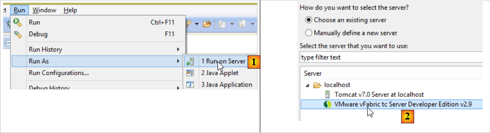 |
- in [1], si esegue il progetto su uno dei server registrati in IDE Eclipse;
- in [2], si seleziona [tc Server Developer], che è presente per impostazione predefinita. Si tratta di una variante di Tomcat;
Fatto ciò, è possibile richiamare URL [http://localhost:8080/gs-rest-service/greeting/?name=Mitchell] in un browser:
 |
Ora sappiamo come generare un archivio WAR. In seguito, continueremo a lavorare con Spring Boot e il suo archivio JAR eseguibile.
2.11.10. Creare un nuovo progetto web
Per creare un nuovo progetto web, si può procedere come segue:
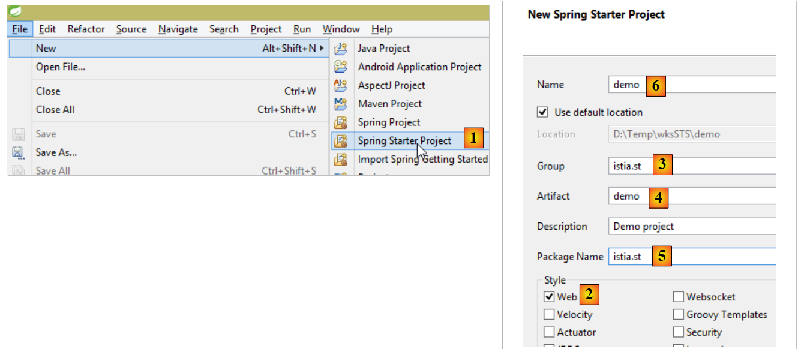 |
- in [1]: File / New / Spring Starter Project
- in [2]: selezionare [Web]. Non si selezionano librerie di viste poiché in un servizio web / JSON non sono presenti viste;
- il progetto creato sarà un progetto Maven. In [3], si inserisce il gruppo dell’artefatto Maven che verrà creato, in [4], il nome dell’artefatto;
- in [5], si inserisce il nome di un pacchetto in cui Spring inserirà la classe di configurazione del progetto;
- in [6], si assegna un nome al progetto Eclipse – che può essere diverso da [4];
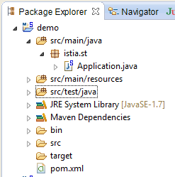 |
2.12. Il livello [web]
 |
 |
Costruiremo il livello web in diverse fasi:
- fase 1: un livello web operativo senza autenticazione;
- fase 2: implementazione dell’autenticazione con Spring Security;
- fase 3: implementazione di CORS [Cross-origin resource sharing (CORS) is a mechanism that allows many resources (e.g. fonts, JavaScript, etc.) on a web page to be requested from another domain outside the domain the resource originated from. (Wikipedia)]. Il client del nostro servizio web sarà un client web Angular che non apparterrà necessariamente allo stesso dominio del nostro servizio web. Per impostazione predefinita, non potrà quindi accedervi a meno che il servizio web non glielo consenta. Vedremo come;
2.12.1. Configurazione Maven
Il file [pom.xml] del progetto è il seguente:
<modelVersion>4.0.0</modelVersion>
<groupId>istia.st.spring4.mvc</groupId>
<artifactId>rdvmedecins-webapi-v1</artifactId>
<version>0.0.1-SNAPSHOT</version>
<name>rdvmedecins-webapi-v1</name>
<description>Gestion de RV Médecins</description>
<parent>
<groupId>org.springframework.boot</groupId>
<artifactId>spring-boot-starter-parent</artifactId>
<version>1.0.0.RELEASE</version>
</parent>
<dependencies>
<dependency>
<groupId>org.springframework.boot</groupId>
<artifactId>spring-boot-starter-web</artifactId>
</dependency>
<dependency>
<groupId>istia.st.spring4.rdvmedecins</groupId>
<artifactId>rdvmedecins-metier-dao</artifactId>
<version>0.0.1-SNAPSHOT</version>
</dependency>
</dependencies>
- righe 7-11: il progetto Maven padre;
- righe 13-16: le dipendenze per un progetto Spring MVC;
- righe 17-21: le dipendenze relative al progetto dei livelli [métier, DAO, JPA];
2.12.2. L'interfaccia del servizio web
 |
- in [1], sopra riportato, il browser può richiedere solo un numero limitato di URL con una sintassi precisa;
- in [4], riceve una risposta JSON;
Le risposte del nostro servizio web avranno tutte la stessa forma, corrispondente alla trasformazione JSON di un oggetto di tipo [Reponse] come segue:
package rdvmedecins.web.models;
public class Reponse {
// ----------------- proprietà
// stato dell'operazione
private int status;
// la risposta JSON
private Object data;
// ---------------costruttori
public Reponse() {
}
public Reponse(int status, Object data) {
this.status = status;
this.data = data;
}
// metodi
public void incrStatusBy(int increment) {
status += increment;
}
// ----------------------getter e setter
...
}
- riga 7: codice di errore della risposta 0: OK, altro: KO;
- riga 9: il corpo della risposta;
Presentiamo ora le schermate che illustrano l’interfaccia del servizio web / JSON:
Elenco di tutti i pazienti dello studio medico [/getAllClients]
 |
Elenco di tutti i medici dello studio medico [/getAllMedecins]
 |
Elenco delle fasce orarie di un medico [/getAllCreneaux/{idMedecin}]
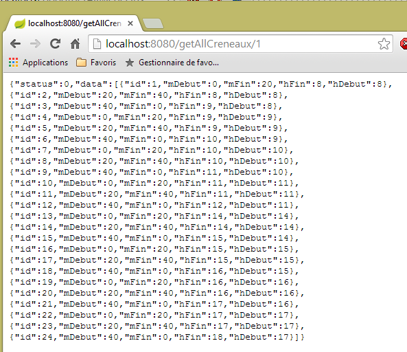 |
Elenco degli appuntamenti di un medico [/getRvMedecinJour/{idMedecin}/{aaaa-mm-jj}
 |
Agenda di un medico [/getAgendaMedecinJour/{idMedecin}/{aaaa-mm-jj}]
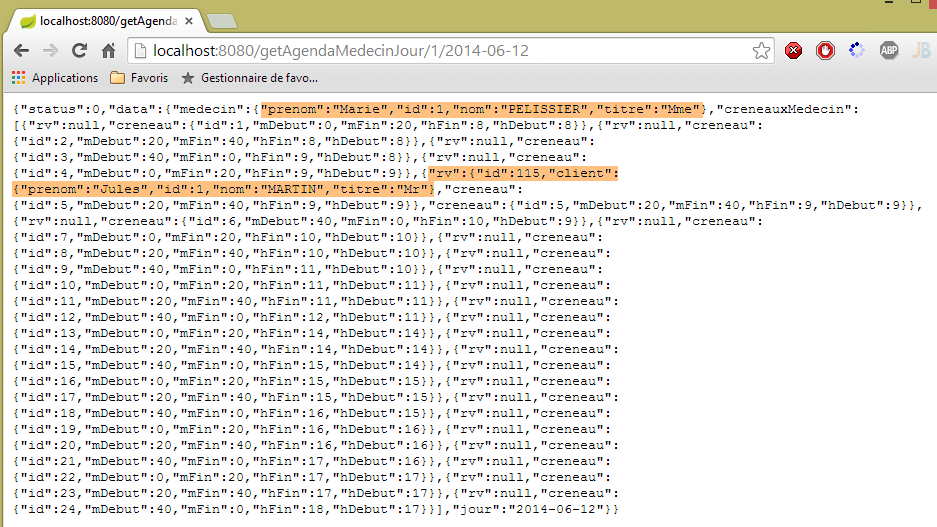 |
Per aggiungere o eliminare un appuntamento utilizziamo l'estensione Chrome [Advanced Rest Client], poiché queste operazioni vengono eseguite tramite POST.
Aggiungere un appuntamento [/ajouterRv]
 |
- in [0], l'URL del servizio web;
- in [1], viene utilizzato il metodo POST;
- in [2], il testo JSON delle informazioni trasmesse al servizio web nella forma {giorno, idClient, idCreneau};
- in [3], il cliente specifica al servizio web che gli invia informazioni nel formato JSON;
La risposta è quindi la seguente:
 |
- in [4]: il client invia l'intestazione che indica che i dati che sta inviando sono in formato JSON;
- in [5]: il servizio web risponde che anche lui invia dati in formato JSON;
- in [6]: la risposta JSON del servizio web. Il campo [data] contiene la forma JSON dell'appuntamento aggiunto;
È possibile verificare la presenza del nuovo appuntamento:
 |
Eliminare un appuntamento [/supprimerRv]
 |
- in [1], il URL del servizio web;
- in [2], viene utilizzato il metodo POST;
- in [3], il testo JSON delle informazioni trasmesse al servizio web nella forma {idRv};
- in [4], il cliente specifica al servizio web che gli sta inviando le informazioni JSON;
La risposta è quindi la seguente:
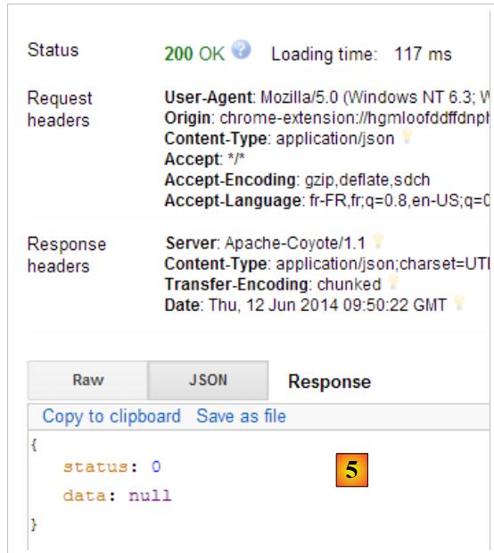 |
- in [5]: il campo [status] è pari a 0, a indicare che l'operazione è andata a buon fine;
È possibile verificare l’eliminazione dell’appuntamento:
 |
Come si vede sopra, l'appuntamento del paziente [Mme GERMAN] non è più presente.
Il servizio web consente inoltre di recuperare le entità tramite il loro identificativo:
 |
 |
 |
 |
Tutte queste entità URL vengono gestite dal controller [RdvMedecinsController] che presentiamo ora.
2.12.3. La struttura del controller [RdvMedecinsController]
 |
Il controller [RdvMedecinsController] è il seguente:
package rdvmedecins.web.controllers;
import java.text.ParseException;
...
@RestController
public class RdvMedecinsController {
@Autowired
private ApplicationModel application;
private List<String> messages;
@PostConstruct
public void init() {
// messaggi di errore dell'applicazione
messages = application.getMessages();
}
// elenco dei medici
@RequestMapping(value = "/getAllMedecins", method = RequestMethod.GET)
public Reponse getAllMedecins() {
...
}
// elenco dei clienti
@RequestMapping(value = "/getAllClients", method = RequestMethod.GET)
public Reponse getAllClients() {
...
}
// elenco delle fasce orarie di un medico
@RequestMapping(value = "/getAllCreneaux/{idMedecin}", method = RequestMethod.GET)
public Reponse getAllCreneaux(@PathVariable("idMedecin") long idMedecin) {
...
}
// elenco degli appuntamenti di un medico
@RequestMapping(value = "/getRvMedecinJour/{idMedecin}/{jour}", method = RequestMethod.GET)
public Reponse getRvMedecinJour(@PathVariable("idMedecin") long idMedecin,
@PathVariable("jour") String jour) {
...
}
@RequestMapping(value = "/getClientById/{id}", method = RequestMethod.GET)
public Reponse getClientById(@PathVariable("id") long id) {
...
}
@RequestMapping(value = "/getMedecinById/{id}", method = RequestMethod.GET)
public Reponse getMedecinById(@PathVariable("id") long id) {
...
}
@RequestMapping(value = "/getRvById/{id}", method = RequestMethod.GET)
public Reponse getRvById(@PathVariable("id") long id) {
...
}
@RequestMapping(value = "/getCreneauById/{id}", method = RequestMethod.GET)
public Reponse getCreneauById(@PathVariable("id") long id) {
...
}
@RequestMapping(value = "/ajouterRv", method = RequestMethod.POST, consumes = "application/json; charset=UTF-8")
public Reponse ajouterRv(@RequestBody PostAjouterRv post) {
...
}
@RequestMapping(value = "/supprimerRv", method = RequestMethod.POST, consumes = "application/json; charset=UTF-8")
public Reponse supprimerRv(@RequestBody PostSupprimerRv post) {
...
}
@RequestMapping(value = "/getAgendaMedecinJour/{idMedecin}/{jour}", method = RequestMethod.GET)
public Reponse getAgendaMedecinJour(
@PathVariable("idMedecin") long idMedecin,
@PathVariable("jour") String jour) {
...
}
}
- riga 6: l’annotazione [@RestController] rende la classe [RdvMedecinsController] un controller Spring. Inoltre, ciò comporta anche che i metodi che gestiscono i URL genereranno una risposta che verrà automaticamente trasformata in JSON;
- righe 9-10: qui Spring inietterà un oggetto di tipo [ApplicationModel];
- riga 13: l'annotazione [@PostConstruct] contrassegna un metodo da eseguire subito dopo l'istanziazione della classe. Quando questo viene eseguito, gli oggetti iniettati da Spring sono disponibili;
- tutti i metodi restituiscono un oggetto di tipo [Reponse] come segue:
package rdvmedecins.web.models;
public class Reponse {
// ----------------- proprietà
// stato dell'operazione
private int status;
// la risposta
private Object data;
...
}
Questo oggetto viene serializzato in JSON prima di essere inviato al browser del cliente;
- riga 20: l’annotazione [@RequestMapping] definisce le condizioni di chiamata del metodo. In questo caso il metodo elabora una richiesta GET proveniente da URL [/getAllMedecins]. Se questa URL fosse stata richiesta da un POST, verrebbe rifiutata e Spring MVC invierebbe un codice di errore HTTP al client web;
- riga 32: il parametro URL è impostato da {idMedecin}. Questo parametro viene recuperato con l’annotazione [@PathVariable] alla riga 33;
- riga 33: l'unico parametro [long idMedecin] riceve il proprio valore dal parametro {idMedecin} di URL [@PathVariable("idMedecin")]. Il parametro in URL e quello del metodo possono avere nomi diversi. Va notato che [@PathVariable("idMedecin")] è di tipo String (tutto il URL è una String), mentre il parametro [long idMedecin] è di tipo [long]. La conversione del tipo avviene automaticamente. Se la conversione fallisce, viene restituito un codice di errore HTTP;
- riga 65: l’annotazione [@RequestBody] indica il corpo della richiesta. In una richiesta GET, non c'è quasi mai un corpo (ma è possibile inserirne uno). In una richiesta POST, il più delle volte c'è (ma è possibile non inserirlo). Per le richieste URL e [ajouterRv], il client web invia nel proprio POST la seguente stringa:
La sintassi [@RequestBody PostAjouterRv post] (riga 65) , unita al fatto che il metodo si aspetta il JSON [consumes = "application/json; charset=UTF-8"] alla riga 64, farà sì che la stringa JSON inviata dal client web venga deserializzata in un oggetto di tipo [PostAjouter]. Quest’ultimo è il seguente:
package rdvmedecins.web.models;
public class PostAjouterRv {
// dati del post
private String jour;
private long idClient;
private long idCreneau;
// getter e setter
...
}
Anche in questo caso, le modifiche di tipo necessarie avverranno automaticamente;
- nelle righe 69-70 si trova un meccanismo simile per URL e [/supprimerRv]. La stringa JSON inviata è la seguente:
e il tipo [PostSupprimerRv] è il seguente:
package rdvmedecins.web.models;
public class PostSupprimerRv {
// dati del post
private long idRv;
// getter e setter
...
}
2.12.4. I modelli del servizio web
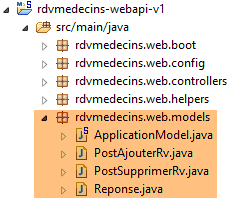 |
Abbiamo già presentato i modelli [Reponse, PostAjouterRv, PostSupprimerRv]. Il modello [ApplicationModel] è il seguente:
package rdvmedecins.web.models;
import java.util.Date;
...
@Component
public class ApplicationModel implements IMetier {
// il livello [métier]
@Autowired
private IMetier métier;
// dati provenienti dal livello [métier]
private List<Medecin> médecins;
private List<Client> clients;
// messaggi di errore
private List<String> messages;
@PostConstruct
public void init() {
// vengono recuperati i medici e i clienti
try {
médecins = métier.getAllMedecins();
clients = métier.getAllClients();
} catch (Exception ex) {
messages = Static.getErreursForException(ex);
}
}
// getter
public List<String> getMessages() {
return messages;
}
// ------------------------- interfaccia del livello [métier]
@Override
public List<Client> getAllClients() {
return clients;
}
@Override
public List<Medecin> getAllMedecins() {
return médecins;
}
@Override
public List<Creneau> getAllCreneaux(long idMedecin) {
return métier.getAllCreneaux(idMedecin);
}
@Override
public List<Rv> getRvMedecinJour(long idMedecin, Date jour) {
return métier.getRvMedecinJour(idMedecin, jour);
}
@Override
public Client getClientById(long id) {
return métier.getClientById(id);
}
@Override
public Medecin getMedecinById(long id) {
return métier.getMedecinById(id);
}
@Override
public Rv getRvById(long id) {
return métier.getRvById(id);
}
@Override
public Creneau getCreneauById(long id) {
return métier.getCreneauById(id);
}
@Override
public Rv ajouterRv(Date jour, Creneau creneau, Client client) {
return métier.ajouterRv(jour, creneau, client);
}
@Override
public void supprimerRv(Rv rv) {
métier.supprimerRv(rv);
}
@Override
public AgendaMedecinJour getAgendaMedecinJour(long idMedecin, Date jour) {
return métier.getAgendaMedecinJour(idMedecin, jour);
}
}
- riga 6: l'annotazione [@Component] rende la classe [ApplicationModel] un componente Spring. Come tutti i componenti Spring visti finora (ad eccezione di @Controller), verrà istanziato un solo oggetto di questo tipo (singleton);
- riga 7: la classe [ApplicationModel] implementa l'interfaccia [IMetier];
- righe 10-11: Spring inietta un riferimento al livello [métier];
- riga 19: l'annotazione [@PostConstruct] fa sì che il metodo [init] venga eseguito subito dopo l'istanziazione della classe [ApplicationModel];
- righe 23-24: si recuperano gli elenchi dei medici e dei clienti dal livello [métier];
- riga 26: se si verifica un'eccezione, si memorizzano i messaggi dello stack delle eccezioni nel campo della riga 17;
La classe [ApplicationModel] ci servirà per due scopi:
- come cache per memorizzare gli elenchi dei medici e dei pazienti (clienti);
- come interfaccia unica per i controller;
L'architettura del livello web si evolve come segue:
 |
- in [2b], i metodi del o dei controller comunicano con il singleton [ApplicationModel];
Questa strategia garantisce flessibilità nella gestione della cache. Attualmente gli orari dei medici non vengono memorizzati nella cache. Per inserirli, è sufficiente modificare la classe [ApplicationModel]. Ciò non ha alcun impatto sul controller, che continuerà a utilizzare il metodo [List<Creneau> getAllCreneaux(long idMedecin)] come faceva in precedenza. Sarà modificata l’implementazione di questo metodo nella classe [ApplicationModel].
2.12.5. La classe Static
La classe [Static] raggruppa una serie di metodi statici di utilità che non hanno alcuna connotazione “aziendale” o “web”:
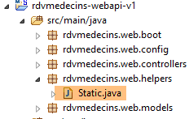 |
Il suo codice è il seguente:
package rdvmedecins.web.helpers;
import java.text.SimpleDateFormat;
...
public class Static {
public Static() {
}
// elenco dei messaggi di errore di un'eccezione
public static List<String> getErreursForException(Exception exception) {
// si recupera l'elenco dei messaggi di errore dell'eccezione
Throwable cause = exception;
List<String> erreurs = new ArrayList<String>();
while (cause != null) {
erreurs.add(cause.getMessage());
cause = cause.getCause();
}
return erreurs;
}
// mappatori Object --> Map
// --------------------------------------------------------
....
}
- riga 12: il metodo [Static.getErreursForException] che è stato utilizzato (riga 8 qui sotto) nel metodo [init] della classe [ApplicationModel]:
@PostConstruct
public void init() {
// si recuperano i medici e i clienti
try {
médecins = métier.getAllMedecins();
clients = métier.getAllClients();
} catch (Exception ex) {
messages = Static.getErreursForException(ex);
}
}
Il metodo crea un oggetto [List<String>] con i messaggi di errore [exception.getMessage()] di un'eccezione [exception] e di quelle in essa contenute [exception.getCause()].
La classe [Static] contiene altri metodi di utilità sui quali torneremo quando li incontreremo.
Ora descriveremo in dettaglio l’elaborazione dei URL del servizio web. In questa elaborazione sono coinvolte tre classi principali:
- il controller [RdvMedecinsController];
- la classe di metodi di utilità [Static];
- la classe di cache [ApplicationModel];
 |
2.12.6. Il metodo [init] del controller
Il controller [RdvMedecinsController] (cfr. paragrafo 2.12.3) dispone di un metodo [init] che viene eseguito subito dopo la sua istanziazione:
@Autowired
private ApplicationModel application;
private List<String> messages;
@PostConstruct
public void init() {
// messaggi di errore dell'applicazione
messages = application.getMessages();
}
- riga 8: i messaggi di errore memorizzati nella cache dell’applicazione [ApplicationModel] vengono salvati localmente nel campo della riga 3. Ciò consentirà ai metodi di verificare se l’applicazione si è inizializzata correttamente.
2.12.7. L'URL [/getAllMedecins]
L'URL [/getAllMedecins] viene elaborato dal seguente metodo del controller [RdvMedecinsController]:
// elenco dei medici
@RequestMapping(value = "/getAllMedecins", method = RequestMethod.GET)
public Reponse getAllMedecins() {
// stato dell'applicazione
if (messages != null) {
return new Reponse(-1, messages);
}
// elenco dei medici
try {
return new Reponse(0, application.getAllMedecins());
} catch (Exception e) {
return new Reponse(1, Static.getErreursForException(e));
}
}
- riga 5: si verifica se l’applicazione si è inizializzata correttamente (messages==null). In caso contrario, viene restituita una risposta con status=-1 e data=messages;
- riga 10: altrimenti si restituisce l'elenco dei medici con un status pari a 0. Il metodo [application.getAllMedecins()] non genera un'eccezione poiché si limita a restituire un elenco presente nella cache. Tuttavia, manterremo questa gestione delle eccezioni nel caso in cui i medici non fossero più memorizzati nella cache;
Non abbiamo ancora illustrato il caso in cui l’applicazione non si sia inizializzata correttamente. Interrompiamo SGBD e MySQL5, avviamo il servizio web e poi richiediamo URL e [/getAllMedecins]:

Si ottiene effettivamente un errore. In condizioni normali, si ottiene la seguente visualizzazione:
|
2.12.8. L'URL [/getAllClients]
L'URL [/getAllClients] viene elaborato dal seguente metodo del controller [RdvMedecinsController]:
// elenco dei clienti
@RequestMapping(value = "/getAllClients")
public Reponse getAllClients() {
// stato dell'applicazione
if (messages != null) {
return new Reponse(-1, messages);
}
// elenco dei clienti
try {
return new Reponse(0, application.getAllClients());
} catch (Exception e) {
return new Reponse(1, Static.getErreursForException(e));
}
}
È analogo al metodo [getAllMedecins] già esaminato. I risultati ottenuti sono i seguenti:
|
2.12.9. L'URL [/getAllCreneaux/{idMedecin}]
Il metodo URL [/getAllCreneaux/{idMedecin}] viene elaborato dal seguente metodo del controller [RdvMedecinsController]:
// elenco delle fasce orarie di un medico
@RequestMapping(value = "/getAllCreneaux/{idMedecin}", method = RequestMethod.GET)
public Reponse getAllCreneaux(@PathVariable("idMedecin") long idMedecin) {
// stato dell'applicazione
if (messages != null) {
return new Reponse(-1, messages);
}
// si recupera il medico
Reponse réponse = getMedecin(idMedecin);
if (réponse.getStatus() != 0) {
return réponse;
}
Medecin médecin = (Medecin) réponse.getData();
// fasce orarie del medico
List<Creneau> créneaux = null;
try {
créneaux = application.getAllCreneaux(médecin.getId());
} catch (Exception e1) {
return new Reponse(3, Static.getErreursForException(e1));
}
// si restituisce la risposta
return new Reponse(0, Static.getListMapForCreneaux(créneaux));
}
- riga 9: il medico identificato dal parametro [id] viene richiesto a un metodo locale:
private Reponse getMedecin(long id) {
// recupero del medico
Medecin médecin = null;
try {
médecin = application.getMedecinById(id);
} catch (Exception e1) {
return new Reponse(1, Static.getErreursForException(e1));
}
// medico già presente?
if (médecin == null) {
return new Reponse(2, null);
}
// ok
return new Reponse(0, médecin);
}
Da questo metodo si ritorna con un status in [0,1,2]. Torniamo al codice del metodo [getAllCreneaux]:
- righe 10-12: se status!=0, si restituisce immediatamente la risposta;
- riga 13: si recupera il medico;
- riga 17: si recuperano gli orari disponibili di quel medico;
- riga 22: si invia come risposta un oggetto [Static.getListMapForCreneaux(créneaux)];
Ricordiamo la definizione della classe [Creneau]:
@Entity
@Table(name = "creneaux")
public class Creneau extends AbstractEntity {
private static final long serialVersionUID = 1L;
// caratteristiche di una fascia oraria di RV
private int hdebut;
private int mdebut;
private int hfin;
private int mfin;
// una fascia oraria è associata a un medico
@ManyToOne(fetch = FetchType.LAZY)
@JoinColumn(name = "id_medecin")
private Medecin medecin;
// chiave esterna
@Column(name = "id_medecin", insertable = false, updatable = false)
private long idMedecin;
...
}
- riga 13: si cerca il medico in modalità [FetchType.LAZY];
Ricordiamo la richiesta JPQL che implementa il metodo [getAllCreneaux] nel livello [DAO]:
@Query("select c from Creneau c where c.medecin.id=?1")
La notazione [c.medecin.id] impone il join tra le tabelle [CRENEAUX] e [MEDECINS]. Pertanto, la query restituisce tutte le fasce orarie del medico, con il nome del medico presente in ciascuna di esse. Quando si serializzano in JSON queste fasce orarie, in ciascuna di esse compare la stringa JSON relativa al medico. Ciò è superfluo. Pertanto, anziché serializzare un oggetto [Creneau], serializzeremo un oggetto [Map] in cui inseriremo solo i campi desiderati.
Torniamo al codice esaminato inizialmente:
// si restituisce la risposta
return new Reponse(0, Static.getListMapForCreneaux(créneaux));
Il metodo [Static.getListMapForCreneaux] è il seguente:
// List<Creneau> --> List<Map>
public static List<Map<String, Object>> getListMapForCreneaux(List<Creneau> créneaux) {
// lista di dizionari <String, Object>
List<Map<String, Object>> liste = new ArrayList<Map<String, Object>>();
for (Creneau créneau : créneaux) {
liste.add(Static.getMapForCreneau(créneau));
}
// si restituisce la lista
return liste;
}
e il metodo [Static.getMapForCreneau] è il seguente:
// Creneau --> Map
public static Map<String, Object> getMapForCreneau(Creneau créneau) {
// C'è qualcosa da fare?
if (créneau == null) {
return null;
}
// dizionario <String,Object>
Map<String, Object> hash = new HashMap<String, Object>();
hash.put("id", créneau.getId());
hash.put("hDebut", créneau.getHdebut());
hash.put("mDebut", créneau.getMdebut());
hash.put("hFin", créneau.getHfin());
hash.put("mFin", créneau.getMfin());
// si restituisce il dizionario
return hash;
}
- riga 8: si crea un dizionario;
- righe 9-13: vi si inseriscono i campi che si desidera mantenere nella stringa JSON. Il campo [medecin] non è presente;
- riga 15: si restituisce questo dizionario;
I risultati ottenuti sono i seguenti:
oppure questi, se la fascia oraria non esiste:
 |
oppure questi in caso di errore di accesso al database:
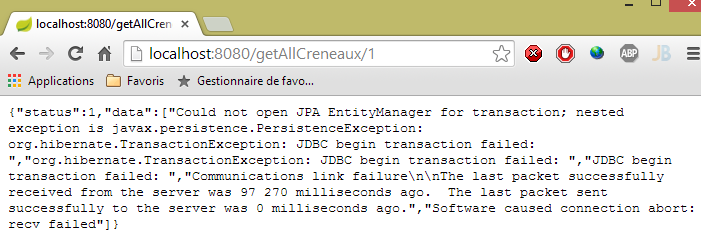 |
2.12.10. L'URL [/getRvMedecinJour/{idMedecin}/{jour}]
L'URL [/getRvMedecinJour/{idMedecin}/{jour}] viene elaborato dal seguente metodo del controller [RdvMedecinsController]:
// elenco degli appuntamenti di un medico
@RequestMapping(value = "/getRvMedecinJour/{idMedecin}/{jour}", method = RequestMethod.GET)
public Reponse getRvMedecinJour(@PathVariable("idMedecin") long idMedecin, @PathVariable("jour") String jour) {
// stato dell'applicazione
if (messages != null) {
return new Reponse(-1, messages);
}
// si verifica la data
Date jourAgenda = null;
SimpleDateFormat sdf = new SimpleDateFormat("yyyy-MM-dd");
sdf.setLenient(false);
try {
jourAgenda = sdf.parse(jour);
} catch (ParseException e) {
return new Reponse(3, null);
}
// si recupera il medico
Reponse réponse = getMedecin(idMedecin);
if (réponse.getStatus() != 0) {
return réponse;
}
Medecin médecin = (Medecin) réponse.getData();
// elenco dei suoi appuntamenti
List<Rv> rvs = null;
try {
rvs = application.getRvMedecinJour(médecin.getId(), jourAgenda);
} catch (Exception e1) {
return new Reponse(4, Static.getErreursForException(e1));
}
// si restituisce la risposta
return new Reponse(0, Static.getListMapForRvs(rvs));
}
- riga 31: viene restituito un oggetto List<Map<String,Object>> invece di un oggetto List<Rv>. Ricordiamo la definizione della classe [Rv]:
@Entity
@Table(name = "rv")
public class Rv extends AbstractEntity {
private static final long serialVersionUID = 1L;
// caratteristiche di un appuntamento
@Temporal(TemporalType.DATE)
private Date jour;
// un appuntamento è collegato a un cliente
@ManyToOne(fetch = FetchType.LAZY)
@JoinColumn(name = "id_client")
private Client client;
// un appuntamento è collegato a una fascia oraria
@ManyToOne(fetch = FetchType.LAZY)
@JoinColumn(name = "id_creneau")
private Creneau creneau;
// chiavi esterne
@Column(name = "id_client", insertable = false, updatable = false)
private long idClient;
@Column(name = "id_creneau", insertable = false, updatable = false)
private long idCreneau;
...
}
- riga 11: il cliente viene cercato con la modalità [FetchType.LAZY];
- riga 18: la fascia oraria viene cercata con la modalità [FetchType.LAZY];
Ricordiamo la query JPQL che recupera gli appuntamenti:
@Query("select rv from Rv rv left join fetch rv.client c left join fetch rv.creneau cr where cr.medecin.id=?1 and rv.jour=?2")
Vengono effettuati esplicitamente dei join per recuperare i campi [client] e [creneau]. Inoltre, a causa del join [cr.medecin.id=?1], avremo anche il medico. Il medico apparirà quindi nella stringa JSON di ogni appuntamento. Tuttavia, questa informazione duplicata è inoltre superflua. Torniamo al codice del metodo:
- riga 31: costruiamo noi stessi il dizionario da serializzare in JSON;
Il dizionario creato per un appuntamento è il seguente:
// Appuntamento --> Mappa
public static Map<String, Object> getMapForRv(Rv rv) {
// C'è qualcosa da fare?
if (rv == null) {
return null;
}
// dizionario <String,Object>
Map<String, Object> hash = new HashMap<String, Object>();
hash.put("id", rv.getId());
hash.put("client", rv.getClient());
hash.put("creneau", getMapForCreneau(rv.getCreneau()));
// si restituisce il dizionario
return hash;
}
- riga 11: riprendiamo il dizionario dell’oggetto [Creneau] che abbiamo presentato in precedenza;
I risultati ottenuti sono i seguenti:
|
oppure questi, con un giorno errato:
 |
oppure questi con un medico errato:
 |
2.12.11. L'URL [/getAgendaMedecinJour/{idMedecin}/{jour}]
L'URL [/getAgendaMedecinJour/{idMedecin}/{jour}] viene elaborato dal metodo seguente del controller [RdvMedecinsController]:
@RequestMapping(value = "/getAgendaMedecinJour/{idMedecin}/{jour}", method = RequestMethod.GET)
public Reponse getAgendaMedecinJour(@PathVariable("idMedecin") long idMedecin, @PathVariable("jour") String jour) {
// stato dell'applicazione
if (messages != null) {
return new Reponse(-1, messages);
}
// si verifica la data
Date jourAgenda = null;
SimpleDateFormat sdf = new SimpleDateFormat("yyyy-MM-dd");
sdf.setLenient(false);
try {
jourAgenda = sdf.parse(jour);
} catch (ParseException e) {
return new Reponse(3, new String[] { String.format("jour [%s] invalide", jour) });
}
// si recupera il medico
Reponse réponse = getMedecin(idMedecin);
if (réponse.getStatus() != 0) {
return réponse;
}
Medecin médecin = (Medecin) réponse.getData();
// si recupera la sua agenda
AgendaMedecinJour agenda = null;
try {
agenda = application.getAgendaMedecinJour(médecin.getId(), jourAgenda);
} catch (Exception e1) {
return new Reponse(4, Static.getErreursForException(e1));
}
// ok
return new Reponse(0, Static.getMapForAgendaMedecinJour(agenda));
}
}
- alla riga 30, viene restituito un oggetto di tipo List<Map<String,Object>.
Il metodo [Static.getMapForAgendaMedecinJour] è il seguente:
// AgendaMedecinJour --> Mappa
public static Map<String, Object> getMapForAgendaMedecinJour(AgendaMedecinJour agenda) {
// c'è qualcosa da fare?
if (agenda == null) {
return null;
}
// dizionario <String,Object>
Map<String, Object> hash = new HashMap<String, Object>();
hash.put("medecin", agenda.getMedecin());
hash.put("jour", new SimpleDateFormat("yyyy-MM-dd").format(agenda.getJour()));
List<Map<String, Object>> créneaux = new ArrayList<Map<String, Object>>();
for (CreneauMedecinJour créneau : agenda.getCreneauxMedecinJour()) {
créneaux.add(getMapForCreneauMedecinJour(créneau));
}
hash.put("creneauxMedecin", créneaux);
// si restituisce il dizionario
return hash;
}
Il dizionario creato presenta tre campi:
- [medecin]: il medico proprietario dell'agenda. Abbiamo mantenuto questa informazione poiché è presente una sola volta, mentre nei casi precedenti veniva ripetuta in ogni stringa JSON;
- [jour]: il giorno dell'agenda;
- [creneauxMedecin]: l’elenco delle fasce orarie del medico con un eventuale appuntamento in quella fascia;
Il metodo [getMapForCreneauMedecinJour] utilizzato alla riga 13 è il seguente:
// CreneauMedecinJour --> mappa
public static Map<String, Object> getMapForCreneauMedecinJour(CreneauMedecinJour créneau) {
// C'è qualcosa da fare?
if (créneau == null) {
return null;
}
// dizionario <String,Object>
Map<String, Object> hash = new HashMap<String, Object>();
hash.put("creneau", getMapForCreneau(créneau.getCreneau()));
hash.put("rv", getMapForRv(créneau.getRv()));
// si restituisce il dizionario
return hash;
}
- righe 9-10: si utilizzano i dizionari già esaminati per i tipi [Creneau] e [Rv], che quindi non includono l’oggetto [Medecin];
I risultati ottenuti sono i seguenti:
oppure questi, se il giorno è errato:
 |
oppure questi se il numero del medico non è valido:
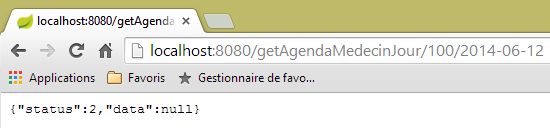 |
2.12.12. L'URL [/getMedecinById/{id}]
L'URL [/getMedecinById/{id}] viene elaborato con il seguente metodo del controllore [RdvMedecinsController]:
@RequestMapping(value = "/getMedecinById/{id}", method = RequestMethod.GET)
public Reponse getMedecinById(@PathVariable("id") long id) {
// stato dell'applicazione
if (messages != null) {
return new Reponse(-1, messages);
}
// si recupera il medico
return getMedecin(id);
}
Riga 8, il metodo [getMedecin] è il seguente:
private Reponse getMedecin(long id) {
// si recupera il medico
Medecin médecin = null;
try {
médecin = application.getMedecinById(id);
} catch (Exception e1) {
return new Reponse(1, Static.getErreursForException(e1));
}
// il medico esiste?
if (médecin == null) {
return new Reponse(2, null);
}
// ok
return new Reponse(0, médecin);
}
I risultati ottenuti sono i seguenti:
|
oppure questi, se il numero del medico non è corretto:
 |
2.12.13. L'URL [/getClientById/{id}]
L'URL [/getClientById/{id}] viene elaborata con il seguente metodo del controllore [RdvMedecinsController]:
@RequestMapping(value = "/getClientById/{id}", method = RequestMethod.GET)
public Reponse getClientById(@PathVariable("id") long id) {
// stato dell'applicazione
if (messages != null) {
return new Reponse(-1, messages);
}
// si recupera il cliente
return getClient(id);
}
Riga 8, il metodo [getClient] è il seguente:
private Reponse getClient(long id) {
// si recupera il cliente
Client client = null;
try {
client = application.getClientById(id);
} catch (Exception e1) {
return new Reponse(1, Static.getErreursForException(e1));
}
// cliente esistente?
if (client == null) {
return new Reponse(2, null);
}
// ok
return new Reponse(0, client);
}
I risultati ottenuti sono i seguenti:
|
oppure questi, se il numero del cliente non è corretto:
 |
2.12.14. L'URL [/getCreneauById/{id}]
L'URL [/getCreneauById/{id}] viene elaborato dal controller [RdvMedecinsController] con il seguente metodo:
@RequestMapping(value = "/getCreneauById/{id}", method = RequestMethod.GET)
public Reponse getCreneauById(@PathVariable("id") long id) {
// stato dell'applicazione
if (messages != null) {
return new Reponse(-1, messages);
}
// si recupera la fascia oraria
Reponse réponse = getCreneau(id);
if (réponse.getStatus() == 0) {
réponse.setData(Static.getMapForCreneau((Creneau) réponse.getData()));
}
// risultato
return réponse;
}
Riga 8, il metodo [getCreneau] è il seguente:
private Reponse getCreneau(long id) {
// si sta recuperando la fascia oraria
Creneau créneau = null;
try {
créneau = application.getCreneauById(id);
} catch (Exception e1) {
return new Reponse(1, Static.getErreursForException(e1));
}
// slot esistente?
if (créneau == null) {
return new Reponse(2, null);
}
// ok
return new Reponse(0, créneau);
}
I risultati ottenuti sono i seguenti:
|
oppure questi, se il numero della fascia oraria non è corretto:
 |
2.12.15. L'URL [/getRvById/{id}]
L'URL [/getRvById/{id}] viene elaborato dal controller [RdvMedecinsController] con il seguente metodo:
@RequestMapping(value = "/getRvById/{id}", method = RequestMethod.GET)
public Reponse getRvById(@PathVariable("id") long id) {
// stato dell'applicazione
if (messages != null) {
return new Reponse(-1, messages);
}
// si recupera l'appuntamento
Reponse réponse = getRv(id);
if (réponse.getStatus() == 0) {
réponse.setData(Static.getMapForRv2((Rv) réponse.getData()));
}
// risultato
return réponse;
}
Riga 8, il metodo [getRv] è il seguente:
private Reponse getRv(long id) {
// si recupera l'Rv
Rv rv = null;
try {
rv = application.getRvById(id);
} catch (Exception e1) {
return new Reponse(1, Static.getErreursForException(e1));
}
// Rv esistente?
if (rv == null) {
return new Reponse(2, null);
}
// ok
return new Reponse(0, rv);
}
Riga 10, il metodo [Static.getMapForRv2] è il seguente:
// Rv --> Mappa
public static Map<String, Object> getMapForRv2(Rv rv) {
// C'è qualcosa da fare?
if (rv == null) {
return null;
}
// dizionario <String,Object>
Map<String, Object> hash = new HashMap<String, Object>();
hash.put("id", rv.getId());
hash.put("idClient", rv.getIdClient());
hash.put("idCreneau", rv.getIdCreneau());
// si restituisce il dizionario
return hash;
}
I risultati ottenuti sono i seguenti:
|
oppure questi, se il numero dell'appuntamento non è corretto:
 |
2.12.16. L'URL [/ajouterRv]
L'URL [/ajouterRv] viene elaborato dal metodo seguente del controller [RdvMedecinsController]:
@RequestMapping(value = "/ajouterRv", method = RequestMethod.POST, consumes = "application/json; charset=UTF-8")
public Reponse ajouterRv(@RequestBody PostAjouterRv post) {
// stato dell'applicazione
if (messages != null) {
return new Reponse(-1, messages);
}
// si recuperano i valori inviati
String jour = post.getJour();
long idCreneau = post.getIdCreneau();
long idClient = post.getIdClient();
// si verifica la data
Date jourAgenda = null;
SimpleDateFormat sdf = new SimpleDateFormat("yyyy-MM-dd");
sdf.setLenient(false);
try {
jourAgenda = sdf.parse(jour);
} catch (ParseException e) {
return new Reponse(6, null);
}
// si recupera la fascia oraria
Reponse réponse = getCreneau(idCreneau);
if (réponse.getStatus() != 0) {
return réponse;
}
Creneau créneau = (Creneau) réponse.getData();
// si recupera il cliente
réponse = getClient(idClient);
if (réponse.getStatus() != 0) {
réponse.incrStatusBy(2);
return réponse;
}
Client client = (Client) réponse.getData();
// si aggiunge l'appuntamento
Rv rv = null;
try {
rv = application.ajouterRv(jourAgenda, créneau, client);
} catch (Exception e1) {
return new Reponse(5, Static.getErreursForException(e1));
}
// si restituisce la risposta
return new Reponse(0, Static.getMapForRv(rv));
}
Non c’è nulla qui che non si sia già visto. Alla riga 41, si restituisce l’appuntamento che è stato aggiunto alla riga 36.
I risultati ottenuti con il client [Advanced Rest Client] sono i seguenti:
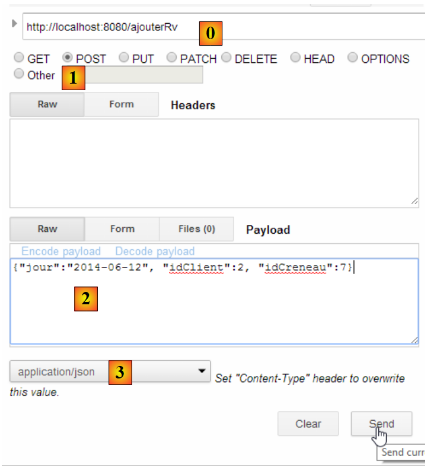 |
oppure a questo, se ad esempio si inserisce un numero di fascia oraria inesistente:
 |
|
2.12.17. L'URL [/supprimerRv]
L'URL [/supprimerRv] viene elaborata dal seguente metodo del controller [RdvMedecinsController]:
@RequestMapping(value = "/supprimerRv", method = RequestMethod.POST, consumes = "application/json; charset=UTF-8")
public Reponse supprimerRv(@RequestBody PostSupprimerRv post) {
// stato dell'applicazione
if (messages != null) {
return new Reponse(-1, messages);
}
// si recuperano i valori inviati
long idRv = post.getIdRv();
// si recupera il valore di ritorno
Reponse réponse = getRv(idRv);
if (réponse.getStatus() != 0) {
return réponse;
}
// eliminazione dell'Rv
try {
application.supprimerRv(idRv);
} catch (Exception e1) {
return new Reponse(3, Static.getErreursForException(e1));
}
// ok
return new Reponse(0, null);
}
I risultati ottenuti da sono i seguenti:
 |
oppure questi, se il numero dell'appuntamento non esiste:
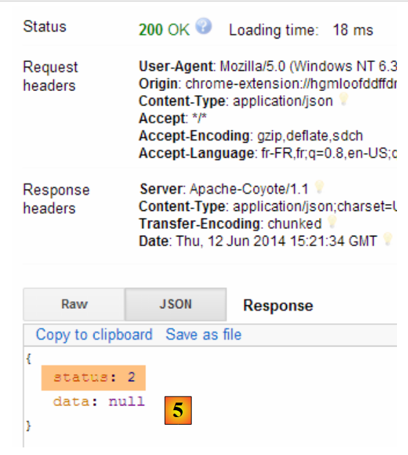 |
Abbiamo terminato con il controller. Vediamo ora come configurare il progetto.
2.12.18. Configurazione del servizio web
 |
La classe di configurazione [AppConfig] è la seguente:
package rdvmedecins.web.config;
import org.springframework.boot.autoconfigure.EnableAutoConfiguration;
import org.springframework.context.annotation.ComponentScan;
import org.springframework.context.annotation.Import;
import rdvmedecins.config.DomainAndPersistenceConfig;
@EnableAutoConfiguration
@ComponentScan(basePackages = { "rdvmedecins.web" })
@Import({ DomainAndPersistenceConfig.class })
public class AppConfig {
}
- riga 9: si passa alla modalità [AutoConfiguration] affinché Spring Boot possa configurare il progetto in base agli archivi che troverà nel Classpath del progetto;
- riga 10: si specifica che i componenti Spring vengano cercati nel pacchetto [rdvmedecins.web] e nei suoi sottocomponenti. In questo modo verranno individuati i componenti:
- [@RestController RdvMedecinsController] nel pacchetto [rdvmedecins.web.controllers];
- [@Component ApplicationModel] nel pacchetto [rdvmedecins.web.models];
- riga 11: si importa la classe [DomainAndPersistenceConfig] che configura il progetto [rdvmedecins-metier-dao] per poter accedere ai bean di tale progetto;
2.12.19. La classe eseguibile del servizio web
 |
La classe [Boot] è la seguente:
package rdvmedecins.web.boot;
import org.springframework.boot.SpringApplication;
import rdvmedecins.web.config.AppConfig;
public class Boot {
public static void main(String[] args) {
SpringApplication.run(AppConfig.class, args);
}
}
Alla riga 10, il metodo statico [SpringApplication.run] viene eseguito con come primo parametro la classe [AppConfig] di configurazione del progetto. Questo metodo provvederà all'autoconfigurazione del progetto, avvierà il server Tomcat integrato nelle dipendenze e vi distribuirà il controller [RdvMedecinsController].
I log di esecuzione sono i seguenti:
- riga 17: il server Tomcat si avvia;
- righe 23-31: i livelli [métier, DAO, JPA] vengono inizializzati;
- riga 34: è stato individuato il metodo che gestisce URL [/getRvMedecinJour/{idMedecin}/{jour}]. Questo processo di individuazione dei metodi del controller si ripete fino alla riga 44;
- riga 52: il servlet Spring MVC [DispatcherServlet] è pronto a rispondere alle richieste dei client web;
Ora disponiamo di un servizio web operativo, accessibile tramite un client web. Passiamo ora alla messa in sicurezza di questo servizio: vogliamo che solo determinate persone possano gestire gli appuntamenti dei medici. A tal fine utilizzeremo il framework Spring Security, un ramo dell’ecosistema Spring.
2.13. Introduzione a Spring Security
Importeremo nuovamente una guida Spring seguendo i passaggi da 1 a 3 riportati di seguito:
 |
 |
Il progetto è composto dai seguenti elementi:
- nella cartella [templates] si trovano le pagine HTML del progetto;
- [Application]: è la classe eseguibile del progetto;
- [MvcConfig]: è la classe di configurazione di Spring MVC;
- [WebSecurityConfig]: è la classe di configurazione di Spring Security;
2.13.1. Configurazione Maven
Il progetto [3] è un progetto Maven. Esaminiamo il suo file [pom.xml] per conoscere le sue dipendenze:
<parent>
<groupId>org.springframework.boot</groupId>
<artifactId>spring-boot-starter-parent</artifactId>
<version>1.1.1.RELEASE</version>
</parent>
<dependencies>
<dependency>
<groupId>org.springframework.boot</groupId>
<artifactId>spring-boot-starter-thymeleaf</artifactId>
</dependency>
<dependency>
<groupId>org.springframework.boot</groupId>
<artifactId>spring-boot-starter-security</artifactId>
</dependency>
</dependencies>
- righe 1-5: il progetto è un progetto Spring Boot;
- righe 8-11: dipendenza dal framework [Thymeleaf] che consente di creare pagine dinamiche HTML. Questo framework può sostituire le pagine JSP (Java Server Pages) che fino a poco tempo fa erano l'impostazione predefinita, il framework di viste di Spring MVC;
- righe 12-15: dipendenza dal framework Spring Security;
2.13.2. Le viste Thymeleaf
 |
La vista [home.html] è la seguente:
 |
<!DOCTYPE html>
<html xmlns="http://www.w3.org/1999/xhtml"
xmlns:th="http://www.thymeleaf.org"
xmlns:sec="http://www.thymeleaf.org/thymeleaf-extras-springsecurity3">
<head>
<title>Spring Security Example</title>
</head>
<body>
<h1>Welcome!</h1>
<p>
Click <a th:href="@{/hello}">here</a> to see a greeting.
</p>
</body>
</html>
- gli attributi [th:xx] sono attributi Thymeleaf. Vengono interpretati da Thymeleaf prima che la pagina HTML venga inviata al client. Il client non li vede;
- riga 12: l'attributo [th:href="@{/hello}"] genererà l'attributo [href] del tag <a>. Il valore [@{/hello}] genererà il percorso [<context>/hello], dove [context] è il contesto dell’applicazione web;
Il codice HTML generato è il seguente:
- riga 10: il contesto dell'applicazione è la radice /;
La vista [hello.html] è la seguente:
 |
<!DOCTYPE html>
<html xmlns="http://www.w3.org/1999/xhtml"
xmlns:th="http://www.thymeleaf.org"
xmlns:sec="http://www.thymeleaf.org/thymeleaf-extras-springsecurity3">
<head>
<title>Hello World!</title>
</head>
<body>
<h1 th:inline="text">Hello [[${#httpServletRequest.remoteUser}]]!</h1>
<form th:action="@{/logout}" method="post">
<input type="submit" value="Sign Out" />
</form>
</body>
</html>
- riga 9: l'attributo [th:inline="text"] genererà il testo del tag <h1>. Questo testo contiene un'espressione $ che deve essere valutata. L'elemento [[${#httpServletRequest.remoteUser}]] è il valore dell'attributo [RemoteUser] della richiesta HTTP corrente. Si tratta del nome dell'utente connesso;
- riga 10: un modulo HTML. L’attributo [th:action="@{/logout}"] genererà l’attributo [action] del tag [form]. Il valore [@{/logout}] genererà il percorso [<context>/logout], dove [context] è il contesto dell'applicazione web;
Il codice HTML generato è il seguente:
- riga 8: la traduzione di Hello [[${#httpServletRequest.remoteUser}]]!;
- riga 9: la traduzione di @{/logout};
- riga 11: un campo nascosto denominato (attributo name) _csrf;
L'ultima vista [login.html] è la seguente:
 |
<!DOCTYPE html>
<html xmlns="http://www.w3.org/1999/xhtml"
xmlns:th="http://www.thymeleaf.org"
xmlns:sec="http://www.thymeleaf.org/thymeleaf-extras-springsecurity3">
<head>
<title>Spring Security Example</title>
</head>
<body>
<div th:if="${param.error}">Invalid username and password.</div>
<div th:if="${param.logout}">You have been logged out.</div>
<form th:action="@{/login}" method="post">
<div>
<label> User Name : <input type="text" name="username" />
</label>
</div>
<div>
<label> Password: <input type="password" name="password" />
</label>
</div>
<div>
<input type="submit" value="Sign In" />
</div>
</form>
</body>
</html>
- riga 9: l'attributo [th:if="${param.error}"] fa sì che il tag <div> venga generato solo se l'URL che visualizza la pagina di login contiene il parametro [error] (http://context/login?error);
- riga 10: l'attributo [th:if="${param.logout}"] fa sì che il tag <div> venga generato solo se l'URL che visualizza la pagina di login contiene il parametro [logout] (http://context/login?logout);
- righe 11-23: un modulo HTML;
- riga 11: il modulo verrà inviato a URL [<context>/login], dove <context> è il contesto dell'applicazione web;
- riga 13: un campo di immissione denominato [username];
- riga 17: un campo di immissione denominato [password];
Il codice HTML generato è il seguente:
Si noti che alla riga 21 Thymeleaf ha aggiunto un campo nascosto denominato [_csrf].
2.13.3. Configurazione Spring MVC
 |
La classe [MvcConfig] configura il framework Spring MVC:
package hello;
import org.springframework.context.annotation.Configuration;
import org.springframework.web.servlet.config.annotation.ViewControllerRegistry;
import org.springframework.web.servlet.config.annotation.WebMvcConfigurerAdapter;
@Configuration
public class MvcConfig extends WebMvcConfigurerAdapter {
@Override
public void addViewControllers(ViewControllerRegistry registry) {
registry.addViewController("/home").setViewName("home");
registry.addViewController("/").setViewName("home");
registry.addViewController("/hello").setViewName("hello");
registry.addViewController("/login").setViewName("login");
}
}
- riga 7: l'annotazione [@Configuration] rende la classe [MvcConfig] una classe di configurazione;
- riga 8: la classe [MvcConfig] estende la classe [WebMvcConfigurerAdapter] per ridefinirne alcuni metodi;
- riga 10: ridefinizione di un metodo della classe padre;
- righe 11-16: il metodo [addViewControllers] consente di associare URL a viste HTML. Vengono effettuate le seguenti associazioni:
vista | |
/templates/home.html | |
/templates/hello.html | |
/templates/login.html |
Il suffisso [html] e la cartella [templates] sono i valori predefiniti utilizzati da Thymeleaf. Possono essere modificati tramite configurazione. La cartella [templates] deve trovarsi nella radice del Classpath del progetto:
 |
Sopra [1], le cartelle [main] e [resources] sono entrambe cartelle sorgente (source folders). Ciò implica che il loro contenuto si troverà nella radice del Classpath del progetto. Pertanto, in [2], le cartelle [hello] e [templates] si troveranno alla radice del Classpath.
2.13.4. Configurazione di Spring Security
 |
La classe [WebSecurityConfig] configura il framework Spring Security:
package hello;
import org.springframework.context.annotation.Configuration;
import org.springframework.security.config.annotation.authentication.builders.AuthenticationManagerBuilder;
import org.springframework.security.config.annotation.web.builders.HttpSecurity;
import org.springframework.security.config.annotation.web.configuration.WebSecurityConfigurerAdapter;
import org.springframework.security.config.annotation.web.servlet.configuration.EnableWebMvcSecurity;
@Configuration
@EnableWebMvcSecurity
public class WebSecurityConfig extends WebSecurityConfigurerAdapter {
@Override
protected void configure(HttpSecurity http) throws Exception {
http.authorizeRequests().antMatchers("/", "/home").permitAll().anyRequest().authenticated();
http.formLogin().loginPage("/login").permitAll().and().logout().permitAll();
}
@Override
protected void configure(AuthenticationManagerBuilder auth) throws Exception {
auth.inMemoryAuthentication().withUser("user").password("password").roles("USER");
}
}
- riga 9: l'annotazione [@Configuration] rende la classe [WebSecurityConfig] una classe di configurazione;
- riga 10: l'annotazione [@EnableWebSecurity] rende la classe [WebSecurityConfig] una classe di configurazione di Spring Security;
- riga 11: la classe [WebSecurity] estende la classe [WebSecurityConfigurerAdapter] per ridefinirne alcuni metodi;
- riga 12: ridefinizione di un metodo della classe padre;
- righe 13-16: il metodo [configure(HttpSecurity http)] viene ridefinito per definire i diritti di accesso alle diverse classi URL dell’applicazione;
- riga 14: il metodo [http.authorizeRequests()] consente di associare i URL ai diritti di accesso. Vengono effettuate le seguenti associazioni:
regola | codice | |
accesso senza autenticazione | | |
accesso solo con autenticazione |
- riga 15: definisce il metodo di autenticazione. L'autenticazione avviene tramite un modulo accessibile a tutti. La disconnessione (logout) è anch'essa accessibile a tutti.
- righe 19-21: ridefiniscono il metodo [configure(AuthenticationManagerBuilder auth)] che gestisce gli utenti;
- riga 20: l’autenticazione avviene con utenti definiti in modo “fisso” [auth.inMemoryAuthentication()]. Un utente è qui definito con il login [user], la password [password] e il ruolo [USER]. È possibile assegnare gli stessi diritti agli utenti che hanno lo stesso ruolo;
2.13.5. Classe eseguibile
 |
La classe [Application] è la seguente:
package hello;
import org.springframework.boot.autoconfigure.EnableAutoConfiguration;
import org.springframework.boot.SpringApplication;
import org.springframework.context.annotation.ComponentScan;
import org.springframework.context.annotation.Configuration;
@EnableAutoConfiguration
@Configuration
@ComponentScan
public class Application {
public static void main(String[] args) throws Throwable {
SpringApplication.run(Application.class, args);
}
}
- riga 8: l'annotazione [@EnableAutoConfiguration] richiede a Spring Boot (riga 3) di effettuare la configurazione che lo sviluppatore non avrà effettuato esplicitamente;
- riga 9: rende la classe [Application] una classe di configurazione Spring;
- riga 10: richiede la scansione della cartella della classe [Application] per individuare i componenti Spring. Le due classi [MvcConfig] e [WebSecurityConfig] verranno così individuate poiché presentano l'annotazione [@Configuration];
- riga 13: il metodo [main] della classe eseguibile;
- riga 14: il metodo statico [SpringApplication.run] viene eseguito con come parametro la classe di configurazione [Application]. Abbiamo già incontrato questo processo e sappiamo che il server Tomcat incluso nelle dipendenze Maven del progetto verrà avviato e il progetto verrà distribuito su di esso. Abbiamo visto che quattro URL erano gestiti da [/, /home, /login, /hello] e che alcuni erano protetti da diritti di accesso.
2.13.6. Test dell’applicazione
Iniziamo richiedendo il URL [/], che è uno dei quattro URL accettati. È associato alla vista [/templates/home.html]:
 |
La URL richiesta, [/], è accessibile a tutti. Ecco perché l’abbiamo ottenuta. Il link [here] è il seguente:
Il URL [/hello] verrà richiesto quando si cliccherà sul link. Questo è protetto:
regola | codice | |
accesso senza autenticazione | | |
accesso solo con autenticazione |
È necessario effettuare l'autenticazione per ottenerlo. Spring Security reindirizzerà quindi il browser del cliente alla pagina di autenticazione. In base alla configurazione visualizzata, si tratta della pagina URL [/login]. Questa è accessibile a tutti:
http.formLogin().loginPage("/login").permitAll().and().logout().permitAll();
Otteniamo quindi [1]:
 |
Il codice sorgente della pagina ottenuta è il seguente:
- alla riga 7 compare un campo nascosto che non è presente nella pagina originale [login.html]. È stato aggiunto da Thymeleaf. Questo codice, denominato CSRF (Cross Site Request Forgery), ha lo scopo di eliminare una vulnerabilità di sicurezza. Questo token deve essere rinviato a Spring Security insieme all’autenticazione affinché quest’ultima venga accettata;
Ricordiamo che Spring Security riconosce solo l’utente user/password. Se inseriamo qualcos’altro in [2], otteniamo la stessa pagina con un messaggio di errore in [3]. Spring Security ha reindirizzato il browser verso URL [http://localhost:8080/login?error]. La presenza del parametro [error] ha attivato la visualizzazione del tag:
<div th:if="${param.error}">Invalid username and password.</div>
Ora inseriamo i valori previsti per utente/password [4]:
 |
- in [4], effettuiamo l’autenticazione;
- in [5], Spring Security ci reindirizza verso URL [/hello] poiché era URL quello che avevamo richiesto quando siamo stati reindirizzati alla pagina di login. L’identità dell’utente è stata visualizzata dalla seguente riga di [hello.html]:
La pagina [5] mostra il seguente modulo:
<form th:action="@{/logout}" method="post">
<input type="submit" value="Sign Out" />
</form>
Quando si fa clic sul pulsante [Sign Out], verrà eseguito un POST su URL [/logout]. Quest’ultimo, così come il URL e il [/login], è accessibile a tutti:
http.formLogin().loginPage("/login").permitAll().and().logout().permitAll();
Nella nostra associazione URL / viste, non abbiamo definito nulla per URL e [/logout]. Cosa succederà? Proviamo:
 |
- in [6], clicchiamo sul pulsante [Sign Out];
- da [7], vediamo che siamo stati reindirizzati a URL [http://localhost:8080/login?logout]. È stato Spring Security a richiedere questo reindirizzamento. La presenza del parametro [logout] in URL ha fatto visualizzare la seguente riga nella vista:
<div th:if="${param.logout}">You have been logged out.</div>
2.13.7. Conclusione
Nell’esempio precedente, avremmo potuto scrivere prima l’applicazione web e poi renderla sicura. Spring Security non è invasivo. È possibile implementare la sicurezza di un’applicazione web già scritta. Inoltre, abbiamo scoperto quanto segue:
- è possibile definire una pagina di autenticazione;
- l’autenticazione deve essere accompagnata dal token CSRF emesso da Spring Security;
- se l’autenticazione fallisce, si viene reindirizzati alla pagina di autenticazione con l’aggiunta di un parametro «error» nel token URL;
- se l’autenticazione va a buon fine, si viene reindirizzati alla pagina richiesta al momento dell’autenticazione. Se si richiede direttamente la pagina di autenticazione senza passare da una pagina intermedia, Spring Security reindirizza alla pagina URL [/] (questo caso non è stato presentato);
- ci si disconnette richiedendo la pagina URL [/logout] con un POST. Spring Security ci reindirizza quindi alla pagina di autenticazione con il parametro logout nel URL;
Tutte queste conclusioni si basano sui comportamenti predefiniti di Spring Security. Tali comportamenti possono essere modificati tramite configurazione, ridefinendo alcuni metodi della classe [WebSecurityConfigurerAdapter].
Il tutorial precedente ci sarà di scarso aiuto nel prosieguo. Utilizzeremo infatti:
- un database per memorizzare gli utenti, le loro password e i loro ruoli;
- un'autenticazione tramite header HTTP;
Esistono pochi tutorial relativi a ciò che vogliamo realizzare in questa sede. La soluzione che verrà proposta è un insieme di codici trovati qua e là.
2.14. Implementazione della sicurezza sul servizio web degli appuntamenti
2.14.1. Il database
Il database [rdvmedecins] viene aggiornato per includere gli utenti, le loro password e i loro ruoli. Vengono aggiunte tre nuove tabelle:

Tabella [USERS]: gli utenti
- ID: chiave primaria;
- VERSION: colonna di versioning della riga;
- IDENTITY: un'identità descrittiva dell'utente;
- LOGIN: il nome utente;
- PASSWORD: la sua password;
Nella tabella USERS, le password non sono memorizzate in chiaro:
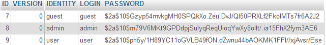 |
L'algoritmo che crittografa le password è l'algoritmo BCRYPT.
Tabella [ROLES]: i ruoli
- ID: chiave primaria;
- VERSION: colonna di versioning della riga;
- NAME: nome del ruolo. Per impostazione predefinita, Spring Security si aspetta nomi del tipo ROLE_XX, ad esempio ROLE_ADMIN o ROLE_GUEST;
 |
Tabella [USERS_ROLES]: tabella di join USERS / ROLES
Un utente può avere più ruoli, un ruolo può raggruppare più utenti. Si ha una relazione molti-a-molti rappresentata dalla tabella [USERS_ROLES].
- ID: chiave primaria;
- VERSION: colonna di versioning della riga;
- USER_ID: identificativo di un utente;
- ROLE_ID: identificativo di un ruolo;
 |
Poiché stiamo modificando il database, è necessario modificare tutti i livelli del progetto [métier, DAO, JPA]:
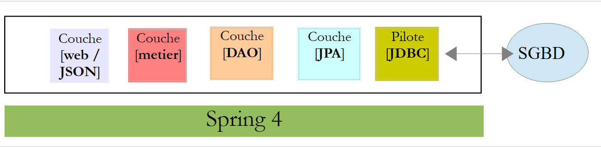 |
2.14.2. Il nuovo progetto Eclipse [métier, DAO, JPA]
Duplichiamo il progetto iniziale [rdvmedecins-metier-dao] in [rdvmedecins-metier-dao-v2]:
 |
- in [1]: il nuovo progetto;
- in [2]: le modifiche apportate per motivi di sicurezza sono state raggruppate in un unico pacchetto [rdvmedecins.security]. Questi nuovi elementi appartengono ai livelli [JPA] e [DAO], ma per semplicità li ho raggruppati in un unico pacchetto.
2.14.3. Le nuove entità [JPA]
 |
Il livello JPA definisce tre nuove entità:
 |
La classe [User] è l'immagine della tabella [USERS]:
package rdvmedecins.entities;
import javax.persistence.Column;
import javax.persistence.Entity;
import javax.persistence.Table;
@Entity
@Table(name = "USERS")
public class User extends AbstractEntity {
private static final long serialVersionUID = 1L;
// immobili
private String identity;
private String login;
private String password;
// costruttore
public User() {
}
public User(String identity, String login, String password) {
this.identity = identity;
this.login = login;
this.password = password;
}
// identità
@Override
public String toString() {
return String.format("User[%s,%s,%s]", identity, login, password);
}
// getter e setter
....
}
- riga 9: la classe estende la classe [AbstractEntity] già utilizzata per le altre entità;
- righe 13-15: non viene specificato alcun nome per le colonne poiché hanno lo stesso nome dei campi ad esse associati;
La classe [Role] è il riflesso della tabella [ROLES]:
package rdvmedecins.entities;
import javax.persistence.Column;
import javax.persistence.Entity;
import javax.persistence.Table;
@Entity
@Table(name = "ROLES")
public class Role extends AbstractEntity {
private static final long serialVersionUID = 1L;
// caratteristiche
private String name;
// costruttori
public Role() {
}
public Role(String name) {
this.name = name;
}
// identità
@Override
public String toString() {
return String.format("Role[%s]", name);
}
// getter e setter
...
}
La classe [UserRole] è l'immagine della tabella [USERS_ROLES]:
package rdvmedecins.entities;
import javax.persistence.Entity;
import javax.persistence.JoinColumn;
import javax.persistence.ManyToOne;
import javax.persistence.Table;
@Entity
@Table(name = "USERS_ROLES")
public class UserRole extends AbstractEntity {
private static final long serialVersionUID = 1L;
// un UserRole fa riferimento a un User
@ManyToOne
@JoinColumn(name = "USER_ID")
private User user;
// un UserRole fa riferimento a un ruolo
@ManyToOne
@JoinColumn(name = "ROLE_ID")
private Role role;
// getter e setter
...
}
- righe 15-17: definiscono la chiave esterna dalla tabella [USERS_ROLES] alla tabella [USERS];
- righe 19-21: definiscono la chiave esterna dalla tabella [USERS_ROLES] alla tabella [ROLES];
2.14.4. Modifiche al livello [DAO]
 |
Il livello [DAO] viene arricchito con tre nuovi [Repository]:
 |
L'interfaccia [UserRepository] gestisce gli accessi alle entità [User]:
package rdvmedecins.repositories;
import org.springframework.data.jpa.repository.Query;
import org.springframework.data.repository.CrudRepository;
import rdvmedecins.entities.Role;
import rdvmedecins.entities.User;
public interface UserRepository extends CrudRepository<User, Long> {
// elenco dei ruoli di un utente identificato dal proprio ID
@Query("select ur.role from UserRole ur where ur.user.id=?1")
Iterable<Role> getRoles(long id);
// elenco dei ruoli di un utente identificato tramite login e password
@Query("select ur.role from UserRole ur where ur.user.login=?1 and ur.user.password=?2")
Iterable<Role> getRoles(String login, String password);
// ricerca di un utente tramite il suo nome utente
User findUserByLogin(String login);
}
- riga 9: l'interfaccia [UserRepository] estende l'interfaccia [CrudRepository] di Spring Data (riga 4);
- righe 12-13: il metodo [getRoles(User user)] consente di ottenere tutti i ruoli di un utente identificato tramite il suo [id]
- righe 16-17: lo stesso, ma per un utente identificato tramite login e password;
L'interfaccia [RoleRepository] gestisce gli accessi alle entità [Role]:
package rdvmedecins.security;
import org.springframework.data.repository.CrudRepository;
public interface RoleRepository extends CrudRepository<Role, Long> {
// ricerca di un ruolo tramite il suo nome
Role findRoleByName(String name);
}
- riga 5: l'interfaccia [RoleRepository] estende l'interfaccia [CrudRepository];
- riga 8: è possibile cercare un ruolo tramite il suo nome;
L'interfaccia [userRoleRepository] gestisce gli accessi alle entità [UserRole]:
package rdvmedecins.security;
import org.springframework.data.repository.CrudRepository;
public interface UserRoleRepository extends CrudRepository<UserRole, Long> {
}
- riga 5: l'interfaccia [UserRoleRepository] si limita a estendere l'interfaccia [CrudRepository] senza aggiungere nuovi metodi;
2.14.5. Le classi di gestione degli utenti e dei ruoli
 |
Spring Security richiede la creazione di una classe che implementi la seguente interfaccia [UsersDetail]:
 |
Questa interfaccia è qui implementata dalla classe [AppUserDetails]:
package rdvmedecins.security;
import java.util.ArrayList;
import java.util.Collection;
import org.springframework.security.core.GrantedAuthority;
import org.springframework.security.core.authority.SimpleGrantedAuthority;
import org.springframework.security.core.userdetails.UserDetails;
public class AppUserDetails implements UserDetails {
private static final long serialVersionUID = 1L;
// proprietà
private User user;
private UserRepository userRepository;
// costruttori
public AppUserDetails() {
}
public AppUserDetails(User user, UserRepository userRepository) {
this.user = user;
this.userRepository = userRepository;
}
// -------------------------interfaccia
@Override
public Collection<? extends GrantedAuthority> getAuthorities() {
Collection<GrantedAuthority> authorities = new ArrayList<>();
for (Role role : userRepository.getRoles(user.getId())) {
authorities.add(new SimpleGrantedAuthority(role.getName()));
}
return authorities;
}
@Override
public String getPassword() {
return user.getPassword();
}
@Override
public String getUsername() {
return user.getLogin();
}
@Override
public boolean isAccountNonExpired() {
return true;
}
@Override
public boolean isAccountNonLocked() {
return true;
}
@Override
public boolean isCredentialsNonExpired() {
return true;
}
@Override
public boolean isEnabled() {
return true;
}
// getter e setter
...
}
- riga 10: la classe [AppUserDetails] implementa l'interfaccia [UserDetails];
- righe 15-16: la classe incapsula un utente (riga 15) e il repository che consente di ottenere i dettagli di tale utente (riga 16);
- righe 22-25: il costruttore che istanzia la classe con un utente e il relativo repository;
- righe 28-35: implementazione del metodo [getAuthorities] dell’interfaccia [UserDetails]. Deve costruire una collezione di elementi di tipo [GrantedAuthority] o derivati. Qui utilizziamo il tipo derivato [SimpleGrantedAuthority] (riga 32) che incapsula il nome di uno dei ruoli dell’utente della riga 15;
- righe 31-33: si percorre l’elenco dei ruoli dell’utente della riga 15 per costruire un elenco di elementi di tipo [SimpleGrantedAuthority];
- righe 38-40: implementano il metodo [getPassword] dell’interfaccia [UserDetails]. Viene restituita la password dell’utente della riga 15;
- righe 38-40: implementano il metodo [getUserName] dell'interfaccia [UserDetails]. Viene restituito il nome utente della riga 15;
- righe 47-50: l'account dell'utente non scade mai;
- righe 52-55: l'account dell'utente non viene mai bloccato;
- righe 57-60: le credenziali dell'utente non scadono mai;
- righe 62-65: l’account dell’utente è sempre attivo;
Spring Security richiede inoltre l’esistenza di una classe che implementi l’interfaccia [AppUserDetailsService]:
 |
Questa interfaccia è implementata dalla seguente classe [AppUserDetails]:
package rdvmedecins.security;
import org.springframework.beans.factory.annotation.Autowired;
import org.springframework.security.core.userdetails.UserDetails;
import org.springframework.security.core.userdetails.UserDetailsService;
import org.springframework.security.core.userdetails.UsernameNotFoundException;
import org.springframework.stereotype.Service;
@Service
public class AppUserDetailsService implements UserDetailsService {
@Autowired
private UserRepository userRepository;
@Override
public UserDetails loadUserByUsername(String login) throws UsernameNotFoundException {
// ricerca dell'utente tramite login
User user = userRepository.findUserByLogin(login);
// Trovato?
if (user == null) {
throw new UsernameNotFoundException(String.format("login [%s] inexistant", login));
}
// vengono restituiti i dettagli dell'utente
return new AppUserDetails(user, userRepository);
}
}
- riga 9: la classe sarà un componente Spring, quindi disponibile nel proprio contesto;
- righe 12-13: il componente [UserRepository] verrà iniettato qui;
- righe 16-25: implementazione del metodo [loadUserByUsername] dell'interfaccia [UserDetailsService] (riga 10). Il parametro è il login dell'utente;
- riga 18: l'utente viene cercato tramite il suo nome utente;
- righe 20-22: se non viene trovato, viene generata un'eccezione;
- riga 24: viene creato e restituito un oggetto [AppUserDetails]. È effettivamente di tipo [UserDetails] (riga 16);
2.14.6. Test del livello [DAO]
 |
Per prima cosa, creiamo una classe eseguibile [CreateUser] in grado di creare un utente con un ruolo:
package rdvmedecins.security;
import org.springframework.context.annotation.AnnotationConfigApplicationContext;
import org.springframework.security.crypto.bcrypt.BCrypt;
import rdvmedecins.config.DomainAndPersistenceConfig;
import rdvmedecins.security.Role;
import rdvmedecins.security.RoleRepository;
import rdvmedecins.security.User;
import rdvmedecins.security.UserRepository;
import rdvmedecins.security.UserRole;
import rdvmedecins.security.UserRoleRepository;
public class CreateUser {
public static void main(String[] args) {
// sintassi: login password roleName
// sono necessari tre parametri
if (args.length != 3) {
System.out.println("Syntaxe : [pg] user password role");
System.exit(0);
}
// si recuperano i parametri
String login = args[0];
String password = args[1];
String roleName = String.format("ROLE_%s", args[2].toUpperCase());
// contesto Spring
AnnotationConfigApplicationContext context = new AnnotationConfigApplicationContext(DomainAndPersistenceConfig.class);
UserRepository userRepository = context.getBean(UserRepository.class);
RoleRepository roleRepository = context.getBean(RoleRepository.class);
UserRoleRepository userRoleRepository = context.getBean(UserRoleRepository.class);
// il ruolo esiste già?
Role role = roleRepository.findRoleByName(roleName);
// se non esiste, lo si crea
if (role == null) {
role = roleRepository.save(new Role(roleName));
}
// L'utente esiste già?
User user = userRepository.findUserByLogin(login);
// se non esiste, lo creiamo
if (user == null) {
// si esegue l'hash della password con bcrypt
String crypt = BCrypt.hashpw(password, BCrypt.gensalt());
// si salva l'utente
user = userRepository.save(new User(login, login, crypt));
// si crea il collegamento con il ruolo
userRoleRepository.save(new UserRole(user, role));
} else {
// l'utente esiste già: possiede il ruolo richiesto?
boolean trouvé = false;
for (Role r : userRepository.getRoles(user.getId())) {
if (r.getName().equals(roleName)) {
trouvé = true;
break;
}
}
// se non viene trovato, si crea la relazione con il ruolo
if (!trouvé) {
userRoleRepository.save(new UserRole(user, role));
}
}
// chiusura del contesto Spring
context.close();
}
}
- riga 17: la classe richiede tre argomenti che definiscono un utente: il suo login, la sua password e il suo ruolo;
- righe 25-27: i tre parametri vengono recuperati;
- riga 29: il contesto Spring viene costruito a partire dalla classe di configurazione [DomainAndPersistenceConfig]. Questa classe era già presente nel progetto precedente. Deve essere modificata come segue:
@EnableJpaRepositories(basePackages = { "rdvmedecins.repositories", "rdvmedecins.security" })
@EnableAutoConfiguration
@ComponentScan(basePackages = { "rdvmedecins" })
@EntityScan(basePackages = { "rdvmedecins.entities", "rdvmedecins.security" })
@EnableTransactionManagement
public class DomainAndPersistenceConfig {
....
}
- riga 1: occorre indicare che ora nel pacchetto [rdvmedecins.security] sono presenti componenti [Repository];
- riga 4: occorre indicare che ora nel pacchetto [rdvmedecins.security] sono presenti entità JPA;
Torniamo al codice per la creazione di un utente:
- righe 30-32: si recuperano i riferimenti dei tre [Repository] che possono esserci utili per creare l'utente;
- riga 34: si verifica se il ruolo esiste già;
- righe 36-38: se non esiste, lo si crea nel database. Avrà un nome del tipo [ROLE_XX];
- riga 40: si verifica se il login esiste già;
- righe 42-49: se l'account non esiste, lo si crea nel database;
- riga 44: si crittografa la password. Qui si utilizza la classe [BCrypt] di Spring Security (riga 4). Sono quindi necessari i file di questo framework. Il file [pom.xml] include una nuova dipendenza:
<dependency>
<groupId>org.springframework.boot</groupId>
<artifactId>spring-boot-starter-security</artifactId>
</dependency>
- riga 46: l'utente viene salvato nel database;
- riga 48: così come la relazione che lo collega al suo ruolo;
- righe 51-57: nel caso in cui l’account esista già, si verifica se tra i suoi ruoli è già presente quello che si desidera assegnargli;
- righe 59-61: se il ruolo cercato non è stato trovato, si crea una riga nella tabella [USERS_ROLES] per collegare l'utente al suo ruolo;
- non ci si è protetti da eventuali eccezioni. Si tratta di una classe di supporto per creare rapidamente un utente con un ruolo.
Quando si esegue la classe con gli argomenti [x x guest], si ottengono fondamentalmente i seguenti risultati:
Tabella [USERS]
 |
Tabella [ROLES]
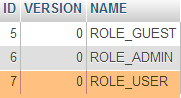 |
Tabella [USERS_ROLES]
 |
Consideriamo ora la seconda classe [UsersTest], che è un test di JUnit:
|
package rdvmedecins.security;
import java.util.List;
import org.junit.Assert;
import org.junit.Test;
import org.junit.runner.RunWith;
import org.springframework.beans.factory.annotation.Autowired;
import org.springframework.boot.test.SpringApplicationConfiguration;
import org.springframework.security.core.authority.SimpleGrantedAuthority;
import org.springframework.security.crypto.bcrypt.BCrypt;
import org.springframework.test.context.junit4.SpringJUnit4ClassRunner;
import rdvmedecins.config.DomainAndPersistenceConfig;
import com.google.common.collect.Lists;
@SpringApplicationConfiguration(classes = DomainAndPersistenceConfig.class)
@RunWith(SpringJUnit4ClassRunner.class)
public class UsersTest {
@Autowired
private UserRepository userRepository;
@Autowired
private AppUserDetailsService appUserDetailsService;
@Test
public void findAllUsersWithTheirRoles() {
Iterable<User> users = userRepository.findAll();
for (User user : users) {
System.out.println(user);
display("Roles :", userRepository.getRoles(user.getId()));
}
}
@Test
public void findUserByLogin() {
// si recupera l'utente [admin]
User user = userRepository.findUserByLogin("admin");
// si verifica che la sua password sia [admin]
Assert.assertTrue(BCrypt.checkpw("admin", user.getPassword()));
// si verifica il ruolo di admin / admin
List<Role> roles = Lists.newArrayList(userRepository.getRoles("admin", user.getPassword()));
Assert.assertEquals(1L, roles.size());
Assert.assertEquals("ROLE_ADMIN", roles.get(0).getName());
}
@Test
public void loadUserByUsername() {
// si recupera l'utente [admin]
AppUserDetails userDetails = (AppUserDetails) appUserDetailsService.loadUserByUsername("admin");
// si verifica che la sua password sia [admin]
Assert.assertTrue(BCrypt.checkpw("admin", userDetails.getPassword()));
// si verifica il ruolo di admin / admin
@SuppressWarnings("unchecked")
List<SimpleGrantedAuthority> authorities = (List<SimpleGrantedAuthority>) userDetails.getAuthorities();
Assert.assertEquals(1L, authorities.size());
Assert.assertEquals("ROLE_ADMIN", authorities.get(0).getAuthority());
}
// metodo di utilità - visualizza gli elementi di una collezione
private void display(String message, Iterable<?> elements) {
System.out.println(message);
for (Object element : elements) {
System.out.println(element);
}
}
}
- righe 27-34: test visivo. Vengono visualizzati tutti gli utenti con i relativi ruoli;
- righe 36-46: si verifica che l’utente [admin] abbia la password [admin] e il ruolo [ROLE_ADMIN] utilizzando il repository [UserRepository];
- riga 41: [admin] è la password in chiaro. Nella base dati, è crittografata secondo l’algoritmo BCrypt. Il metodo [ BCrypt.checkpw] consente di verificare che la password in chiaro, una volta crittografata, sia effettivamente uguale a quella presente nella base dati;
- righe 48-59: si verifica che l'utente [admin] abbia la password [admin] e il ruolo [ROLE_ADMIN] utilizzando il servizio [appUserDetailsService];
L'esecuzione dei test ha esito positivo con i seguenti log:
2.14.7. Conclusione intermedia
L'aggiunta delle classi necessarie a Spring Security è stata possibile con poche modifiche al progetto originale. Ricordiamole:
- aggiunta di una dipendenza da Spring Security nel file [pom.xml];
- creazione di tre tabelle aggiuntive nel database;
- creazione delle entità JPA e dei componenti Spring nel pacchetto [rdvmedecins.security];
Questo caso particolarmente favorevole deriva dal fatto che le tre tabelle aggiunte al database sono indipendenti da quelle esistenti. Si sarebbe potuto persino inserirle in un database separato. Ciò è stato possibile perché si è deciso che un utente avesse un’esistenza indipendente dai medici e dai clienti. Se questi ultimi fossero stati utenti potenziali, sarebbe stato necessario creare collegamenti tra la tabella [USERS] e le tabelle [MEDECINS] e [CLIENTS]. Ciò avrebbe quindi avuto un impatto significativo sul progetto esistente.
2.14.8. Il progetto Eclipse del livello [web]
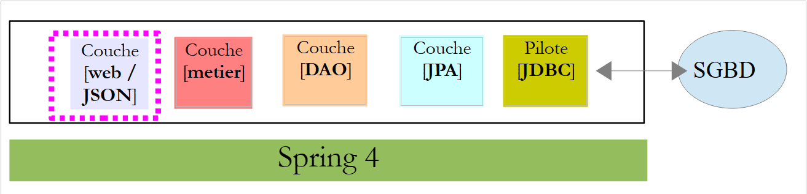 |
Il precedente progetto [rdvmedecins-webapi] è stato duplicato nel progetto [rdvmedecins-webapi-v2] [1]:
 |
Le uniche modifiche da apportare riguardano il pacchetto [rdvmedecins.web.config], in cui è necessario configurare Spring Security. Abbiamo già incontrato una classe di configurazione di Spring Security:
package hello;
import org.springframework.context.annotation.Configuration;
import org.springframework.security.config.annotation.authentication.builders.AuthenticationManagerBuilder;
import org.springframework.security.config.annotation.web.builders.HttpSecurity;
import org.springframework.security.config.annotation.web.configuration.WebSecurityConfigurerAdapter;
import org.springframework.security.config.annotation.web.servlet.configuration.EnableWebMvcSecurity;
@Configuration
@EnableWebMvcSecurity
public class WebSecurityConfig extends WebSecurityConfigurerAdapter {
@Override
protected void configure(HttpSecurity http) throws Exception {
http.authorizeRequests().antMatchers("/", "/home").permitAll().anyRequest().authenticated();
http.formLogin().loginPage("/login").permitAll().and().logout().permitAll();
}
@Override
protected void configure(AuthenticationManagerBuilder auth) throws Exception {
auth.inMemoryAuthentication().withUser("user").password("password").roles("USER");
}
}
Seguiremo la stessa procedura:
- riga 11: definire una classe che estenda la classe [WebSecurityConfigurerAdapter];
- riga 13: definire un metodo [configure(HttpSecurity http)] che definisca i diritti di accesso alle diverse classi URL del servizio web;
- riga 19: definire un metodo [configure(AuthenticationManagerBuilder auth)] che definisce gli utenti e i loro ruoli;
La configurazione di Spring Security è gestita dalla classe [SecurityConfig]:
package rdvmedecins.web.config;
import org.springframework.beans.factory.annotation.Autowired;
import org.springframework.boot.autoconfigure.EnableAutoConfiguration;
import org.springframework.http.HttpMethod;
import org.springframework.security.config.annotation.authentication.builders.AuthenticationManagerBuilder;
import org.springframework.security.config.annotation.web.builders.HttpSecurity;
import org.springframework.security.config.annotation.web.configuration.EnableWebSecurity;
import org.springframework.security.config.annotation.web.configuration.WebSecurityConfigurerAdapter;
import org.springframework.security.crypto.bcrypt.BCryptPasswordEncoder;
import rdvmedecins.security.AppUserDetailsService;
@EnableAutoConfiguration
@EnableWebSecurity
public class SecurityConfig extends WebSecurityConfigurerAdapter {
@Autowired
private AppUserDetailsService appUserDetailsService;
@Override
protected void configure(AuthenticationManagerBuilder registry) throws Exception {
// l'autenticazione viene effettuata dal bean [appUserDetailsService]
// la password è crittografata tramite l’algoritmo di hash Bcrypt
registry.userDetailsService(appUserDetailsService).passwordEncoder(new BCryptPasswordEncoder());
}
@Override
protected void configure(HttpSecurity http) throws Exception {
// CSRF
http.csrf().disable();
// la password viene trasmessa tramite l'intestazione Authorization: Basic xxxx
http.httpBasic();
// solo il ruolo ADMIN può utilizzare l'applicazione
http.authorizeRequests() //
.antMatchers("/", "/**") // tutti i URL
.hasRole("ADMIN");
}
}
- righe 14-15: sono state riprese le annotazioni dell'esempio;
- righe 17-18: viene iniettata la classe [AppUserDetails] che consente l'accesso agli utenti dell'applicazione;
- righe 20-21: il metodo [configure(HttpSecurity http)] definisce gli utenti e i loro ruoli. Riceve come parametro un tipo [AuthenticationManagerBuilder]. Questo parametro viene arricchito con due informazioni:
- un riferimento al servizio [appUserDetailsService] della riga 18 che consente l’accesso agli utenti registrati. Si noti qui che il fatto che siano registrati in un database non risulta evidente. Potrebbero quindi trovarsi in una cache, essere forniti da un servizio web, ...
- il tipo di crittografia utilizzato per la password. Ricordiamo che abbiamo utilizzato l’algoritmo BCrypt;
- righe 27-40: il metodo [configure(HttpSecurity http)] definisce i diritti di accesso ai URL del servizio web;
- riga 30: abbiamo visto nel progetto introduttivo che, per impostazione predefinita, Spring Security gestiva un token CSRF (Cross Site Request Forgery) che l’utente che desiderava autenticarsi doveva rinviare al server. Qui questo meccanismo è disattivato;
- riga 32: si attiva la modalità di autenticazione tramite intestazione HTTP. Il client dovrà inviare la seguente intestazione HTTP:
dove «code» è la codifica della stringa «login:password» tramite l’algoritmo Base64. Ad esempio, la codifica Base64 della stringa admin:admin è YWRtaW46YWRtaW4=. Pertanto, l'utente con nome utente [admin] e password [admin] invierà la seguente intestazione HTTP per autenticarsi:
- righe 34-36: indicano che tutti i URL del servizio web sono accessibili agli utenti con il ruolo [ROLE_ADMIN]. Ciò significa che un utente che non possiede questo ruolo non può accedere al servizio web;
La classe [AppConfig], che configura l’intera applicazione, si evolve come segue:
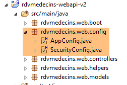 |
package rdvmedecins.web.config;
import org.springframework.boot.autoconfigure.EnableAutoConfiguration;
import org.springframework.context.annotation.ComponentScan;
import org.springframework.context.annotation.Import;
import rdvmedecins.config.DomainAndPersistenceConfig;
@EnableAutoConfiguration
@ComponentScan(basePackages = { "rdvmedecins.web" })
@Import({ DomainAndPersistenceConfig.class, SecurityConfig.class })
public class AppConfig {
}
- La modifica riguarda la riga 11: si specifica che ora sono presenti due file di configurazione da utilizzare: [DomainAndPersistenceConfig] e [SecurityConfig].
2.14.9. Test del servizio web
Testeremo il servizio web con il client Chrome [Advanced Rest Client]. Dovremo specificare l'intestazione di autenticazione HTTP:
dove [code] è il codice Base64 della stringa [login:password]. Per generare questo codice, è possibile utilizzare il seguente programma:
 |
package rdvmedecins.helpers;
import org.springframework.security.crypto.codec.Base64;
public class Base64Encoder {
public static void main(String[] args) {
// sono richiesti due argomenti: login e password
if (args.length != 2) {
System.out.println("Syntaxe : login password");
System.exit(0);
}
// si recuperano i due argomenti
String chaîne = String.format("%s:%s", args[0], args[1]);
// si codifica la stringa
byte[] data = Base64.encode(chaîne.getBytes());
// si visualizza la sua codifica Base64
System.out.println(new String(data));
}
}
Se eseguiamo questo programma con i due argomenti [admin admin]:
 |
si ottiene il seguente risultato:
Ora che sappiamo come generare l'intestazione di autenticazione HTTP, avviamo il servizio web, ora protetto. Quindi, con il client Chrome [Advanced Rest Client], richiediamo l'elenco di tutti i medici:
 |
- in [1], richiediamo l’URL dei medici;
- in [2], con un metodo GET;
- in [3], forniamo l'intestazione HTTP dell'autenticazione. Il codice [YWRtaW46YWRtaW4=] è la codifica Base64 della stringa [admin:admin];
- in [4], inviamo il comando HTTP;
La risposta del server è la seguente:
 |
- in [1], l'intestazione di autenticazione HTTP;
- in [2], il server restituisce una risposta JSON;
- in [3], l'elenco dei medici.
Proviamo ora a inviare una richiesta HTTP con un'intestazione di autenticazione errata. La risposta è quindi la seguente:
 |
- in [1] e [3]: l'intestazione di autenticazione HTTP;
- in [2]: la risposta del servizio web;
Ora proviamo con l'utente user / user. Esiste ma non ha accesso al servizio web. Se eseguiamo il programma di codifica Base64 con i due argomenti [user user]:
 |
otteniamo il seguente risultato:
 |
- in [1] e [3]: l’intestazione di autenticazione HTTP;
- in [2]: la risposta del servizio web. È diversa dalla precedente, che era [401 Unauthorized]. In questo caso, l’utente si è autenticato correttamente ma non dispone dei diritti sufficienti per accedere a URL;
2.15. Conclusion
Ricordiamo l’architettura complessiva della nostra applicazione client/server:
 |
Un servizio web protetto è ora operativo. Vedremo che dovrà essere modificato a seguito di problemi che emergeranno durante la creazione del client Angular JS. Ma aspetteremo di incontrare il problema per risolverlo. Ora creeremo il client Angular che fornirà un'interfaccia web per gestire gli appuntamenti dei medici.